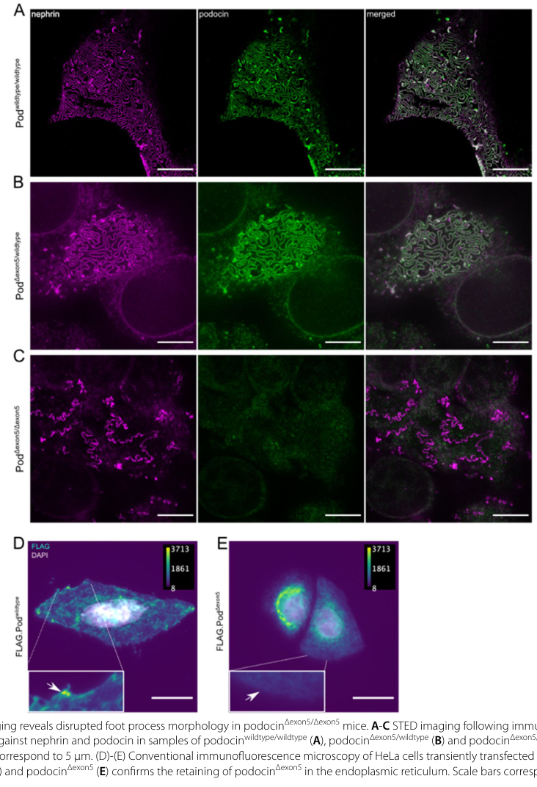

Podocin is a critical scaffolding protein of the slit diaphragm in kidney podocytes. It belongs to the stomatin/band-7 protein family and contains a PHB (prohibitin homology) domain. Podocin adopts a hairpin-like membrane topology with both N- and C-termini facing the cytoplasm. It functions as a lipid raft organizer that recruits nephrin, neph1, CD2AP, and TRPC6 into specialized membrane microdomains at the slit diaphragm. Podocin binds cholesterol through its PHB domain and regulates mechanosensitive TRPC6 channel activity. It serves as an essential linker between slit diaphragm components and the actin cytoskeleton. Mutations in NPHS2 cause autosomal recessive steroid-resistant nephrotic syndrome (SRNS) with focal segmental glomerulosclerosis, demonstrating its crucial role in glomerular filtration barrier function.
| GO Term | Evidence | Action | Reason |
|---|---|---|---|
|
GO:0005886
plasma membrane
|
IBA
GO_REF:0000033 |
ACCEPT |
Summary: Podocin is a membrane-associated protein that localizes to the plasma membrane of podocytes at the slit diaphragm. The IBA annotation is well-supported by phylogenetic inference and extensive experimental evidence demonstrating plasma membrane localization [PMID:11786407].
Reason: Podocin is clearly established as a plasma membrane protein in podocytes. The deep research confirms that podocin is an integral membrane protein with a hairpin-like topology that positions both N- and C-termini in the cytoplasm while the central hydrophobic region associates with the plasma membrane [PMID:11786407]. UniProt also annotates isoform 1 to the cell membrane. This is a core localization for podocin function.
Supporting Evidence:
PMID:11786407
23 Using immunogold labeling and electron microsopy, we showed the podocin distribution at the base of the foot processes and precisely determined its localization on either side of the slit diaphragm, the slit membrane itself being unlabeled
PMID:10742096
NPHS2 is almost exclusively expressed in the podocytes of fetal and mature kidney glomeruli, and encodes a new integral membrane protein, podocin, belonging to the stomatin protein family.
PMID:14570703
We show that wild-type podocin is targeted to the plasma membrane, and forms homo-oligomers involving the carboxy and amino terminal cytoplasmic domains.
|
|
GO:0005783
endoplasmic reticulum
|
IEA
GO_REF:0000044 |
KEEP AS NON CORE |
Summary: The ER annotation is based on UniProt subcellular location vocabulary mapping. UniProt specifically notes that isoform 2 (Pod-short) localizes to the endoplasmic reticulum, not the main isoform 1.
Reason: This annotation represents a trafficking/biosynthesis location rather than the functional site. The main isoform (isoform 1) localizes to the plasma membrane at the slit diaphragm, which is where podocin performs its core scaffolding function. The ER localization is specifically for isoform 2 according to UniProt. Disease-causing mutations often cause ER retention of misfolded podocin, but the ER is not the functional location for wild-type podocin.
Supporting Evidence:
file:human/NPHS2/NPHS2-deep-research-perplexity.md
Disease-causing mutations that impair podocin trafficking result in accumulation of the mutant protein in these intracellular compartments. For instance, the P118L mutation causes predominant accumulation in the endoplasmic reticulum.
PMID:38114895
Experiments in cell culture could show that this isoform is mostly retained in the endoplasmic reticulum, which is a pathogenic feature known from other disease causing mutations of podocin
|
|
GO:0005886
plasma membrane
|
IEA
GO_REF:0000120 |
ACCEPT |
Summary: Automated annotation to plasma membrane is correct and redundant with the IBA annotation. Well-supported by experimental evidence.
Reason: Plasma membrane localization is a core feature of podocin function. This IEA annotation is consistent with extensive experimental evidence showing podocin at the cytoplasmic face of the plasma membrane at the slit diaphragm [PMID:11786407].
Supporting Evidence:
PMID:11786407
Interestingly, both the C- and N-terminal domains of the protein identified by specific antibodies are co-localized at the cytoplasmic face of the plasma membrane, a finding in agreement with the hairpin-like predicted structure of podocin
|
|
GO:0016020
membrane
|
IEA
GO_REF:0000002 |
MODIFY |
Summary: Generic membrane annotation from InterPro. This is too general given that more specific localizations are well-established.
Reason: The generic GO:0016020 membrane term is an over-generalization. Podocin has well-characterized localization to the plasma membrane, specifically at the slit diaphragm. The more specific term GO:0005886 plasma membrane should be preferred.
Proposed replacements:
plasma membrane
Supporting Evidence:
PMID:11786407
In the mature kidney, NPHS2 is exclusively expressed in the podocytes of mature glomeruli
|
|
GO:0005515
protein binding
|
IPI
PMID:22662192 IQGAP1 interacts with components of the slit diaphragm compl... |
REMOVE |
Summary: This annotation is based on IQGAP1 interaction study showing podocin interacts with IQGAP1 and other slit diaphragm components via immunoprecipitation.
Reason: The generic term GO:0005515 protein binding is uninformative and does not capture the specific scaffolding function of podocin. Podocin's protein interactions are integral to its scaffolding role at the slit diaphragm, recruiting nephrin, CD2AP, TRPC6, and other proteins into lipid raft microdomains. A more informative molecular function annotation such as scaffold protein binding or structural constituent activity would be preferable.
Supporting Evidence:
PMID:22662192
The In situ Proximity Ligation assay confirmed interactions between IQGAP1 and proteins of the slit diaphragm complex, nephrin, MAGI-1, CD2AP, podocin and NCK1/2
|
|
GO:0009898
cytoplasmic side of plasma membrane
|
IEA
GO_REF:0000120 |
ACCEPT |
Summary: Automated annotation correctly identifies podocin topology with cytoplasmic orientation. This is consistent with the hairpin membrane topology established by experimental studies.
Reason: Podocin has a well-characterized hairpin-like membrane topology where both the N-terminal and C-terminal domains face the cytoplasm [PMID:11786407]. This is essential for its scaffolding function linking slit diaphragm components to the cytoskeleton. The annotation accurately reflects podocin's membrane topology.
Supporting Evidence:
PMID:11786407
Interestingly, both the C- and N-terminal domains of the protein identified by specific antibodies are co-localized at the cytoplasmic face of the plasma membrane, a finding in agreement with the hairpin-like predicted structure of podocin
file:human/NPHS2/NPHS2-deep-research-perplexity.md
The hairpin structure positions both the N-terminal region (amino acids 1-100) and the C-terminal region (amino acids 126-383) intracellularly within the cytoplasm.
PMID:24596097
podocin and MEC-2 are membrane-associated proteins with a predicted hairpin-like structure and amino and carboxyl termini facing the cytoplasm
|
|
GO:0010467
gene expression
|
IEA
GO_REF:0000107 |
REMOVE |
Summary: Annotation to gene expression is based on ortholog transfer from Ensembl Compara. This is an extremely vague term that does not reflect podocin's actual function.
Reason: GO:0010467 gene expression is an overly generic term that does not meaningfully describe podocin function. Podocin is a structural/scaffolding protein at the slit diaphragm, not a transcription factor or direct regulator of gene expression. This appears to be an erroneous or overly broad automated annotation that should be removed.
Supporting Evidence:
file:human/NPHS2/NPHS2-deep-research-perplexity.md
The essential function of podocin is to position nephrin correctly within lipid raft microdomains, thereby enabling nephrin to participate in proper slit diaphragm assembly.
|
|
GO:0036057
slit diaphragm
|
IEA
GO_REF:0000107 |
ACCEPT |
Summary: Automated annotation to slit diaphragm is correct. This is a core localization for podocin that has been extensively validated by experimental studies.
Reason: The slit diaphragm is the primary functional location of podocin in podocytes. Extensive experimental evidence from immunogold electron microscopy precisely localizes podocin to the cytoplasmic face of the slit diaphragm [PMID:11786407]. This annotation is a core localization representing where podocin performs its essential scaffolding function.
Supporting Evidence:
PMID:11786407
23 Using immunogold labeling and electron microsopy, we showed the podocin distribution at the base of the foot processes and precisely determined its localization on either side of the slit diaphragm, the slit membrane itself being unlabeled
file:human/NPHS2/NPHS2-deep-research-perplexity.md
Podocin is located at the base of the foot processes, at the insertion site of the slit diaphragm where it contacts the cytoplasm of the podocyte cell body.
PMID:38114895
STED microscopy revealed the complete absence of podocin at the podocytes' slit diaphragm and severe morphological alterations of podocyte foot processes.
|
|
GO:0071944
cell periphery
|
IEA
GO_REF:0000107 |
MODIFY |
Summary: Cell periphery annotation is correct but less specific than plasma membrane.
Reason: GO:0071944 cell periphery is a parent term of plasma membrane. Since podocin has well-established localization to the plasma membrane at the slit diaphragm, the more specific term GO:0005886 plasma membrane should be used.
Proposed replacements:
plasma membrane
Supporting Evidence:
PMID:11786407
Interestingly, both the C- and N-terminal domains of the protein identified by specific antibodies are co-localized at the cytoplasmic face of the plasma membrane, a finding in agreement with the hairpin-like predicted structure of podocin
|
|
GO:0003094
glomerular filtration
|
TAS
PMID:10742096 NPHS2, encoding the glomerular protein podocin, is mutated i... |
ACCEPT |
Summary: This TAS annotation to glomerular filtration is well-supported by the original discovery paper demonstrating NPHS2 mutations cause nephrotic syndrome with disrupted glomerular filtration barrier function.
Reason: Glomerular filtration is the core biological process that podocin is involved in. The original cloning paper [PMID:10742096] established that NPHS2 mutations cause steroid-resistant nephrotic syndrome with disrupted glomerular filtration, and podocin-deficient mice develop massive proteinuria demonstrating the essential role of podocin in glomerular filtration barrier function.
Supporting Evidence:
PMID:10742096
We found ten different NPHS2 mutations, comprising nonsense, frameshift and missense mutations, to segregate with the disease, demonstrating a crucial role for podocin in the function of the glomerular filtration barrier.
file:human/NPHS2/NPHS2-deep-research-perplexity.md
In podocin-deficient mice, extensive podocyte lesions develop and massive proteinuria appears before birth, leading to death from uremia within days of life.
|
|
GO:0070062
extracellular exosome
|
HDA
PMID:23533145 In-depth proteomic analyses of exosomes isolated from expres... |
KEEP AS NON CORE |
Summary: High-throughput proteomics study detecting podocin in urinary exosomes from prostatic secretions.
Reason: Detection in extracellular exosomes likely reflects the normal turnover and shedding of podocyte proteins rather than a core functional location. Podocin's primary function is at the slit diaphragm, not in exosomes. This annotation reflects proteomics detection but not functional localization.
Supporting Evidence:
file:human/NPHS2/NPHS2-deep-research-perplexity.md
Podocin detected in urinary exosome proteomics studies reflects protein shedding rather than functional localization
PMID:23533145
2013 Apr 23. In-depth proteomic analyses of exosomes isolated from expressed prostatic secretions in urine.
|
|
GO:0070062
extracellular exosome
|
HDA
PMID:19056867 Large-scale proteomics and phosphoproteomics of urinary exos... |
KEEP AS NON CORE |
Summary: Large-scale proteomics study of urinary exosomes detecting podocin.
Reason: Similar to the other exosome annotation, detection of podocin in urinary exosomes reflects protein shedding rather than functional localization. This is not a core functional location for podocin.
Supporting Evidence:
file:human/NPHS2/NPHS2-deep-research-perplexity.md
Podocin detected in urinary exosome proteomics studies reflects protein shedding rather than functional localization
PMID:19056867
2008 Dec 3. Large-scale proteomics and phosphoproteomics of urinary exosomes.
|
|
GO:0005886
plasma membrane
|
TAS
Reactome:R-HSA-373734 |
ACCEPT |
Summary: Reactome pathway annotation for nephrin-podocin interaction at the plasma membrane. This is consistent with the well-established slit diaphragm localization.
Reason: The Reactome annotation correctly places podocin at the plasma membrane where it interacts with nephrin. This is consistent with extensive experimental evidence and represents a core localization for podocin function.
Supporting Evidence:
PMID:11786407
This suggests that podocin, as a membrane protein anchored to the plasma membrane, could interact with the intracellular domains of the transmembrane proteins localized in the slit diaphragm such as nephrin, P-cadherin, or FAT
|
|
GO:0036057
slit diaphragm
|
IDA
PMID:11786407 Podocin localizes in the kidney to the slit diaphragm area. |
ACCEPT |
Summary: Direct experimental evidence from immunogold electron microscopy precisely localizing podocin to the slit diaphragm area in podocyte foot processes.
Reason: This IDA annotation is supported by rigorous immunogold electron microscopy demonstrating podocin localization at the base of foot processes on either side of the slit diaphragm [PMID:11786407]. This is the core functional location for podocin where it organizes the slit diaphragm protein complex.
Supporting Evidence:
PMID:11786407
23 Using immunogold labeling and electron microsopy, we showed the podocin distribution at the base of the foot processes and precisely determined its localization on either side of the slit diaphragm, the slit membrane itself being unlabeled
|
|
GO:0009898
cytoplasmic side of plasma membrane
|
IDA
PMID:11786407 Podocin localizes in the kidney to the slit diaphragm area. |
ACCEPT |
Summary: Direct experimental evidence demonstrating that both N- and C-terminal domains of podocin face the cytoplasm, establishing its hairpin membrane topology.
Reason: The IDA annotation is directly supported by immunogold labeling using antibodies against both N- and C-terminal regions of podocin, showing both domains localize to the cytoplasmic face of the plasma membrane [PMID:11786407]. This topology is essential for podocin's scaffolding function.
Supporting Evidence:
PMID:11786407
Interestingly, both the C- and N-terminal domains of the protein identified by specific antibodies are co-localized at the cytoplasmic face of the plasma membrane, a finding in agreement with the hairpin-like predicted structure of podocin
|
|
GO:0072249
metanephric podocyte development
|
IEP
PMID:11786407 Podocin localizes in the kidney to the slit diaphragm area. |
ACCEPT |
Summary: Expression pattern study showing NPHS2 is expressed during podocyte development in the metanephric kidney starting at the late S-shaped body stage.
Reason: The IEP annotation is appropriately applied based on temporal expression data showing podocin expression during metanephric kidney development [PMID:11786407]. Podocin expression is first detected in metanephric podocytes at the late S-shaped body stage and persists through differentiation. This represents a legitimate developmental role for podocin.
Supporting Evidence:
PMID:11786407
In metanephric kidneys, the NPHS2 transcript was initially detected in the lower limb of the late S-shaped body, in the presumptive podocytes but not in future parietal epithelial cells
|
|
GO:0030036
actin cytoskeleton organization
|
IDA
PMID:17675666 Podocin participates in the assembly of tight junctions betw... |
KEEP AS NON CORE |
Summary: Study showing podocin facilitates coalescence of lipid rafts and restricts their lateral mobility through dynamic actin reorganization and tethering of protein complexes to the cytoskeleton.
Reason: Podocin's role in actin cytoskeleton organization is indirect, mediated through its scaffolding function and interaction with CD2AP which directly links to actin. The primary function of podocin is as a lipid raft organizer and scaffold protein. The actin cytoskeleton organization is a downstream consequence of podocin's scaffolding activity rather than a direct molecular function.
Supporting Evidence:
PMID:17675666
Consistent with this, we found that podociin facilitated the coalescence of preassembled lipid rafts containing CAR and restricted their lateral mobility, the latter likely a result of dynamic actin reorganization and subsequent tethering of CAR-podocin complexes to the cytoskeleton
file:human/NPHS2/NPHS2-deep-research-perplexity.md
Podocin localizes specifically to the non-contractile actin network within foot processes and serves to anchor this network to the slit diaphragm complex. The protein achieves this anchoring function through its interactions with CD2AP.
|
|
GO:0045121
membrane raft
|
IDA
PMID:17675666 Podocin participates in the assembly of tight junctions betw... |
ACCEPT |
Summary: Study demonstrating podocin localizes to and organizes lipid raft microdomains, facilitating coalescence of preassembled rafts at podocyte junctions.
Reason: Lipid raft organization is a core function of podocin. It localizes to detergent-resistant membrane fractions and organizes lipid raft microdomains that recruit slit diaphragm proteins including nephrin and TRPC6 [PMID:17675666]. Podocin binds cholesterol through its PHB domain and this cholesterol recruitment is essential for proper slit diaphragm assembly.
Supporting Evidence:
PMID:17675666
Consistent with this, we found that podociin facilitated the coalescence of preassembled lipid rafts containing CAR and restricted their lateral mobility, the latter likely a result of dynamic actin reorganization and subsequent tethering of CAR-podocin complexes to the cytoskeleton
file:human/NPHS2/NPHS2-deep-research-perplexity.md
Podocin localizes to detergent-resistant membrane (DRM) fractions, biochemical preparations enriched in lipid rafts that are resistant to extraction by non-ionic detergents such as Triton X-100. This lipid raft localization is functionally important; recruitment of nephrin into lipid rafts is dependent on functional podocin.
PMID:14570703
The association of podocin with specialized lipid raft microdomains of the plasma membrane was a prerequisite for recruitment of nephrin into rafts.
PMID:24596097
Podocin(P118L) and MEC-2(P134S) did not fractionate in detergent-resistant membrane domains.
|
|
GO:0005911
cell-cell junction
|
IDA
PMID:17675666 Podocin participates in the assembly of tight junctions betw... |
ACCEPT |
Summary: Study showing podocin participates in assembly of tight junctions between foot processes in nephrotic podocytes, colocalizing with CAR and ZO-1 at cell-cell contacts.
Reason: The slit diaphragm is a specialized cell-cell junction between podocyte foot processes. Podocin is recruited to sites of cell-cell contact and colocalizes with junction proteins CAR and ZO-1 [PMID:17675666]. This annotation appropriately captures podocin's localization at the specialized junction between podocytes.
Supporting Evidence:
PMID:17675666
In this study, we confirmed that podocin colocalizes with CAR and ZO-1 at the tight junction between foot processes in nephrotic rats
|
|
GO:0005515
protein binding
|
IPI
PMID:17675666 Podocin participates in the assembly of tight junctions betw... |
REMOVE |
Summary: Evidence from co-immunoprecipitation showing podocin forms a multi-protein complex with CAR, ZO-1, and other junctional proteins.
Reason: GO:0005515 protein binding is uninformative for a scaffolding protein like podocin. Podocin's interactions with multiple slit diaphragm proteins (nephrin, CD2AP, TRPC6, CAR, ZO-1) are integral to its scaffolding function but should be represented by more specific molecular function terms rather than generic protein binding.
Supporting Evidence:
PMID:17675666
Immunoprecipitation suggested that these three junctional proteins from a multi-protein complex
|
|
GO:0032991
protein-containing complex
|
IDA
PMID:17675666 Podocin participates in the assembly of tight junctions betw... |
ACCEPT |
Summary: Evidence showing podocin forms a multi-protein complex with CAR, ZO-1, and cytoskeletal proteins.
Reason: Podocin functions as part of a large multiprotein complex at the slit diaphragm. Proteomic analyses have identified podocin in macromolecular assemblies of 1.5-3 megadaltons containing nephrin, neph1, CD2AP, and many other proteins [PMID:17675666]. This annotation correctly reflects podocin's participation in protein complexes.
Supporting Evidence:
PMID:17675666
Immunoprecipitation suggested that these three junctional proteins from a multi-protein complex
file:human/NPHS2/NPHS2-deep-research-perplexity.md
Podocin is present in native slit diaphragms as part of macromolecular assemblies with apparent molecular weights in the range of 1.5-3 megadaltons.
PMID:26792178
Podocin and its Caenorhabditis elegans orthologue MEC-2 have emerged as key components of mechanosensitive membrane protein signalling complexes.
PMID:14570703
wild-type podocin is targeted to the plasma membrane, and forms homo-oligomers involving the carboxy and amino terminal cytoplasmic domains
|
|
GO:0005515
protein binding
|
IPI
PMID:12424224 NEPH1 defines a novel family of podocin interacting proteins... |
REMOVE |
Summary: Evidence from pull-down assays demonstrating podocin interacts with NEPH1 family proteins through their C-terminal domain.
Reason: The generic protein binding term is uninformative for podocin which is known to function as a scaffolding protein with specific interactions with nephrin, neph1, CD2AP, and TRPC6. These interactions should be captured by more specific MF terms if available, or the scaffolding role should be represented in BP annotations.
Supporting Evidence:
PMID:12424224
We report now that NEPH1 belongs to a family of three closely related proteins that interact with the C-terminal domain of podocin
|
|
GO:0005886
plasma membrane
|
TAS
PMID:10742096 NPHS2, encoding the glomerular protein podocin, is mutated i... |
ACCEPT |
Summary: The original discovery paper describes podocin as an integral membrane protein with predicted plasma membrane localization based on sequence analysis.
Reason: The original cloning paper [PMID:10742096] correctly identified podocin as an integral membrane protein belonging to the stomatin family, which are characteristically plasma membrane-associated proteins. This has been validated by subsequent experimental studies.
Supporting Evidence:
PMID:10742096
NPHS2 is almost exclusively expressed in the podocytes of fetal and mature kidney glomeruli, and encodes a new integral membrane protein, podocin, belonging to the stomatin protein family.
|
|
GO:0005198
structural molecule activity
|
TAS
PMID:10742096 NPHS2, encoding the glomerular protein podocin, is mutated i... |
NEW |
Summary: Podocin functions as a structural scaffold at the slit diaphragm, organizing lipid raft microdomains and recruiting key proteins. This molecular function annotation captures podocin's essential role.
Reason: Podocin's primary molecular function is as a structural scaffolding protein at the slit diaphragm. It does not have enzymatic activity but rather serves to organize the multiprotein complex at the slit diaphragm. The deep research extensively documents this scaffolding role.
Supporting Evidence:
file:human/NPHS2/NPHS2-deep-research-perplexity.md
Our results suggest that podocin could serve to anchor directly or indirectly components of the slit diaphragm to the cytoskeleton.
PMID:17675666
our data suggest that podocin may also serve as a scaffold that links tight junction proteins to the actin cytoskeleton in nephrotic foot processes
PMID:10742096
NPHS2, encoding the glomerular protein podocin, is mutated in autosomal recessive steroid-resistant nephrotic syndrome.
|
|
GO:0015485
cholesterol binding
|
IDA
PMID:24596097 A disease-causing mutation illuminates the protein membrane ... |
NEW |
Summary: Podocin binds cholesterol through its PHB domain, which is essential for lipid raft organization and TRPC6 channel regulation.
Reason: Multiple studies have demonstrated that podocin directly binds cholesterol through residues in the PHB domain. This cholesterol binding is functionally critical for organizing lipid raft microdomains at the slit diaphragm and for proper regulation of the TRPC6 channel.
Supporting Evidence:
file:human/NPHS2/NPHS2-deep-research-perplexity.md
Biochemical studies have demonstrated direct binding of cholesterol to podocin through residues in the PHB domain. Podocin lacking the PHB domain (PodocinDeltaPHB) fails to bind cholesterol and does not properly activate TRPC6.
PMID:24596097
the carboxyl terminus of podocin/MEC-2 has to be placed at the inner leaflet of the plasma membrane to mediate cholesterol binding and contribute to ion channel activity, a prerequisite for mechanosensation and the integrity of the kidney filtration barrier.
|
Q: What is the precise stoichiometry and architecture of the podocin oligomeric complex?
Q: How does phosphorylation at T234 regulate podocin function and oligomerization?
Q: What are the conformational changes in podocin upon mechanical stress sensing?
Experiment: Cryo-EM structural determination of podocin oligomeric complexes reconstituted in lipid nanodiscs
Hypothesis: Podocin forms defined oligomeric structures with specific stoichiometry that can be visualized at near-atomic resolution
Type: structural biology
Experiment: Live imaging of podocin dynamics at the slit diaphragm using super-resolution microscopy
Hypothesis: Podocin shows dynamic localization patterns at the slit diaphragm that correlate with mechanical stress
Type: imaging
Experiment: Systematic mutagenesis of cholesterol-binding residues to map lipid interaction interface
Hypothesis: Specific residues in the PHB domain are essential for cholesterol binding and TRPC6 regulation
Type: biochemical assay
The research report should be a detailed narrative explaining the function, biological processes, and localization of the gene product. Citations should be given for all claims.
You should prioritize authoritative reviews and primary scientific literature when conducting research. You can supplement
this with annotations you find in gene/protein databases, but these can be outdated or inaccurate.
We are specifically interested in the primary function of the gene - for enzymes, what reaction is catalyzed, and what is the substrate specificity? For transporters, what is the substrate? For structural proteins or adapters, what is the broader structural role? For signaling molecules, what is the role in the pathway.
We are interested in where in or outside the cell the gene product carries out its function.
We are also interested in the signaling or biochemical pathways in which the gene functions. We are less interested in broad pleiotropic effects, except where these elucidate the precise role.
Include evidence where possible. We are interested in both experimental evidence as well as inference from structure, evolution, or bioinformatic analysis. Precise studies should be prioritized over high-throughput, where available.
The research target is human NPHS2, which encodes podocin, corresponding to UniProt Q9NP85 / Q9NP85_PODO_HUMAN (Schurek et al., 2014-04; https://doi.org/10.1074/jbc.m113.521773) (schurek2014adiseasecausingmutation pages 7-9). Podocin is consistently described as a stomatin-like / prohibitin-homology (PHB) / band-7/SPFH family membrane protein with a hairpin-like (monotopic) topology and an essential role at the podocyte slit diaphragm (schurek2014adiseasecausingmutation pages 1-2, huber2003molecularbasisof pages 2-3, huber2003molecularbasisof pages 1-2).
A common ambiguity in this literature is that “PHB” refers to the prohibitin-homology domain class (SPFH/band-7 domain superfamily), not the separate human PHB gene (prohibitin) (schurek2014adiseasecausingmutation pages 1-2, schurek2014adiseasecausingmutation pages 7-9). In addition, podocin is frequently compared with its C. elegans ortholog MEC-2, but the present report is restricted to Homo sapiens NPHS2/podocin (schurek2014adiseasecausingmutation pages 1-2, schurek2014adiseasecausingmutation pages 7-9).
The slit diaphragm is a specialized junction between podocyte foot processes that forms a crucial component of the glomerular filtration barrier. Authoritative reviews frame it as both a structural filter and a signaling platform whose disruption leads to foot process effacement and proteinuria (Welsh & Saleem, 2010-11; https://doi.org/10.1002/path.2661) (welsh2010nephrin—signaturemoleculeof pages 1-3). Reviews of podocyte adaptor proteins similarly emphasize that slit diaphragm components are linked to the actin cytoskeleton by adaptor/scaffold proteins localized near lipid rafts, enabling dynamic mechanochemical signaling (Ha, 2013-02; https://doi.org/10.5527/wjn.v2.i1.1) (ha2013rolesofadaptor pages 1-2).
Podocin is not an enzyme catalyzing a chemical reaction, nor a classical transporter. Instead, convergent evidence supports podocin’s primary molecular role as a membrane microdomain organizer/scaffold that (i) oligomerizes, (ii) binds/organizes cholesterol-rich microdomains, and (iii) recruits and stabilizes key slit diaphragm proteins—most notably nephrin—within lipid raft-like compartments required for signaling (Huber et al., 2003-12; https://doi.org/10.1093/hmg/ddg360) (huber2003molecularbasisof pages 2-3, huber2003molecularbasisof pages 1-2, huber2003molecularbasisof pages 5-6).
Primary and mechanistic studies localize podocin to the podocyte slit diaphragm and show it partitions into detergent-resistant membrane (DRM) fractions, consistent with lipid raft association (schurek2014adiseasecausingmutation pages 6-7, huber2003molecularbasisof pages 2-3, huber2003molecularbasisof pages 1-2). A 2023 in vivo isoform study further provides super-resolution STED microscopy evidence of podocin at the slit diaphragm in wild-type animals, and its absence from the slit diaphragm in a deleterious splice-isoform model (butt2023invivocharacterization media e512a162).
Podocin is described as a hairpin-like membrane protein with both N- and C- termini in the cytoplasm, consistent with a monotopic insertion and an extended cytosolic C-terminal region containing the PHB/SPFH domain (schurek2014adiseasecausingmutation pages 1-2, huber2003molecularbasisof pages 2-3, huber2003molecularbasisof pages 1-2). Schurek et al. (2014-04) provide experimental evidence that a conserved proline near the hydrophobic stretch preceding the PHB domain is critical for correct topology; disease-causing mutation (e.g., P118L) can flip the C-terminus extracellularly and lead to N-glycosylation, linking topology directly to function and disease (schurek2014adiseasecausingmutation pages 9-9, schurek2014adiseasecausingmutation pages 6-7, schurek2014adiseasecausingmutation pages 1-2).
A key mechanistic model is that podocin recruits nephrin into lipid raft microdomains at the slit diaphragm, which is necessary for nephrin-dependent signal transduction. Huber et al. (2003-12) show that disease-causing NPHS2 mutations disrupt nephrin’s raft targeting and prevent podocin from augmenting nephrin signaling (e.g., AP-1 reporter activation), while not necessarily blocking nephrin surface delivery per se (huber2003molecularbasisof pages 5-6). This supports an interpretation that podocin’s dominant function is microdomain organization rather than general secretory trafficking (huber2003molecularbasisof pages 5-6).
Schurek et al. (2014-04) provide biochemical and functional evidence that podocin is a cholesterol-binding DRM-associated protein and that correct topology is required for cholesterol interaction (schurek2014adiseasecausingmutation pages 6-7). They further report that podocin can modulate ion channel behavior: wild-type podocin augments TRPC6 currents, whereas topology-disrupting mutants fail to do so (schurek2014adiseasecausingmutation pages 6-7, schurek2014adiseasecausingmutation pages 1-2). In this framing, TRPC6 regulation is an output of podocin-organized slit-diaphragm microdomains/supercomplexes rather than a primary enzymatic activity (schurek2014adiseasecausingmutation pages 6-7).
Direct experimental evidence supports interactions with nephrin, CD2AP, TRPC6, and NEPH1/Neph1, consistent with a slit-diaphragm “supercomplex” model (schurek2014adiseasecausingmutation pages 6-7, rinschen2016theubiquitinligase pages 11-13). Rinschen et al. (2016-04; https://doi.org/10.1093/hmg/ddw016) report that podocin forms large megadalton complexes mediated by the PHB domain and identify site-specific ubiquitylation (e.g., K301) as affecting stability/unfolding—supporting regulation of complex assembly via proteostasis/ubiquitin pathways (rinschen2016theubiquitinligase pages 11-13).
Butt et al. (2023-12; https://doi.org/10.1186/s12882-023-03420-x) identified a short podocin isoform lacking exon 5 (within the PHB domain) detected in human kidney and tested a murine equivalent (Δexon5) in vivo. The Δexon5 isoform is largely ER-retained in cells and fails to stabilize slit-diaphragm localization; homozygous Δexon5 mice show massively reduced podocin protein despite preserved mRNA and exhibit severe congenital albuminuria with neonatal lethality (butt2023invivocharacterization pages 2-6, butt2023invivocharacterization pages 1-2). STED microscopy demonstrates absence of podocin at the slit diaphragm with disrupted foot process morphology in homozygotes, providing strong localization/function evidence (butt2023invivocharacterization media e512a162).
A 2024 systematic review/meta-analysis (Lee et al., 2024-11; https://doi.org/10.3390/ijms252212275) aggregated 40 studies (2,889 screened patients) and estimated a pooled NPHS2 mutation prevalence of ~11% (95% CI 8–14%), with substantial heterogeneity (I2 ~73.8%) (lee2024nphsmutationsin pages 1-2). In cohorts reporting end-stage renal failure (18 studies), the pooled ESRF proportion was ~47% (95% CI 34–61%) (lee2024nphsmutationsin pages 1-2, lee2024nphsmutationsin pages 6-9). The review also notes population-dependent variability in NPHS2 prevalence and reports a Europe-specific association of higher ESRF risk in NPHS2-mutated patients in their analysis (lee2024nphsmutationsin pages 1-2).
Pantel et al. (2024-09; https://doi.org/10.1007/s00467-023-06134-2) performed CNV analysis in 138 SRNS families and identified a causal homozygous NPHS2 exonic deletion (6,790 bp; chr1:179,519,242–179,526,033) in one individual, supporting the clinical relevance of CNV detection beyond SNV/indel assays (pantel2024copynumbervariation pages 12-14).
Tanzi et al. (2024-08; https://doi.org/10.1186/s12967-024-05575-z) describe a non-invasive platform using urine-derived podocytes from children with SRNS (with characterized genetic mutations, including slit-diaphragm genes such as NPHS2) to test interventions. They show neonatal kidney progenitor cell-derived extracellular vesicles (EVs) reduced albumin permeability across patient-derived podocyte lines, while standard drugs frequently showed limited effect, highlighting a translational workflow for personalized therapeutic screening in genetic podocytopathies (tanzi2024urinederivedpodocytesfrom pages 1-2).
A key real-world use of NPHS2 knowledge is genetic screening in suspected congenital/SRNS, with the explicit rationale of earlier diagnosis and avoiding unnecessary steroid exposure in monogenic steroid-unresponsive disease (Lee et al., 2024-11; https://doi.org/10.3390/ijms252212275) (lee2024nphsmutationsin pages 1-2). Contemporary reviews on FSGS genetics similarly emphasize genetic testing when there is family history or treatment resistance and note that genetic forms often do not respond to immunosuppression—supporting implementation of NGS panels including NPHS2 in clinical practice (Bonilla et al., 2024-06; https://doi.org/10.1016/j.xkme.2024.100826) (bonilla2024areviewof pages 1-2).
Recent reviews highlight that identifying a monogenic cause (including NPHS2) informs transplant planning and family donor screening. A 2024 Pediatric Nephrology review argues that NGS should become a diagnostic standard and that genetic testing is required for familial donor screening to avoid selecting donors carrying pathogenic variants (Mitrotti et al., 2024-09; https://doi.org/10.1007/s00467-023-06046-1) (mitrotti2024hiddengeneticsbehind pages 19-20). Genetic diagnosis is also discussed as useful for predicting post-transplant recurrence risk in FSGS contexts (bonilla2024areviewof pages 2-4).
A 2023 review frames pediatric nephrotic syndrome as a “podocytopathy” and explicitly includes podocin (NPHS2) among core slit diaphragm/GBM-associated proteins whose defects can drive congenital and steroid-resistant phenotypes, reinforcing its status as a clinically actionable diagnostic node (de Castro et al., 2023-12; https://doi.org/10.3390/kidneydial3040030) (castro2023theviewof pages 1-2).
Across primary mechanistic papers and reviews, a consistent expert synthesis emerges: the slit diaphragm is not a passive “filter,” but a dynamic, lipid-microdomain-organized signaling hub. Podocin is interpreted as a central organizer that couples nephrin to cholesterol-rich microdomains and thereby to downstream signaling and cytoskeletal regulation (huber2003molecularbasisof pages 5-6, welsh2010nephrin—signaturemoleculeof pages 1-3). Reviews place podocin among adaptor/scaffold components that localize near lipid rafts at the intracellular slit diaphragm insertion and help connect membrane complexes to actin dynamics, providing a mechanistic basis for how NPHS2 mutations cause foot process effacement and proteinuria (ha2013rolesofadaptor pages 1-2).
The following table links each major functional/clinical claim to specific supporting sources and URLs/DOIs.
| Item | Evidence summary | Key source (authors/year) | URL/DOI |
|---|---|---|---|
| Molecular identity & domains/topology | NPHS2 encodes podocin, corresponding to UniProt Q9NP85/Q9NP85_PODO_HUMAN; podocin is a PHB/band7-SPFH/stomatin-like family protein with a hairpin-like membrane topology and both N- and C-termini facing the cytoplasm (schurek2014adiseasecausingmutation pages 1-2, schurek2014adiseasecausingmutation pages 7-9, butt2023invivocharacterization pages 1-2, huber2003molecularbasisof pages 2-3, huber2003molecularbasisof pages 1-2) | Schurek et al. 2014; Huber et al. 2003; Butt et al. 2023 | https://doi.org/10.1074/jbc.m113.521773; https://doi.org/10.1093/hmg/ddg360; https://doi.org/10.1186/s12882-023-03420-x |
| Molecular identity & domains/topology | A conserved proline preceding the PHB domain helps maintain podocin’s monotopic hairpin topology; disease-causing proline mutation P118L/P120L can flip topology toward a transmembrane form, expose the C-terminus extracellularly, and permit N-glycosylation (schurek2014adiseasecausingmutation pages 9-9, schurek2014adiseasecausingmutation pages 6-7, schurek2014adiseasecausingmutation pages 1-2) | Schurek et al. 2014 | https://doi.org/10.1074/jbc.m113.521773 |
| Subcellular localization | Podocin localizes to the podocyte slit diaphragm and to detergent-resistant/lipid-raft membrane microdomains, where it is enriched with nephrin and other slit diaphragm proteins (schurek2014adiseasecausingmutation pages 1-2, schurek2014adiseasecausingmutation pages 6-7, huber2003molecularbasisof pages 2-3, huber2003molecularbasisof pages 1-2) | Huber et al. 2003; Schurek et al. 2014 | https://doi.org/10.1093/hmg/ddg360; https://doi.org/10.1074/jbc.m113.521773 |
| Subcellular localization | STED microscopy in the 2023 Δexon5 model showed wild-type podocin at the slit diaphragm, whereas homozygous Δexon5 animals lacked slit-diaphragm podocin and had severely disrupted foot process morphology; the short isoform was retained around the ER in cells (butt2023invivocharacterization pages 1-2, butt2023invivocharacterization pages 10-12, butt2023invivocharacterization media e512a162) | Butt et al. 2023 | https://doi.org/10.1186/s12882-023-03420-x |
| Core molecular functions | Podocin acts primarily as a scaffolding/organizing protein rather than an enzyme or transporter: it oligomerizes and recruits nephrin into lipid-raft microdomains required for nephrin signaling at the slit diaphragm (huber2003molecularbasisof pages 2-3, huber2003molecularbasisof pages 1-2, huber2003molecularbasisof pages 6-6, huber2003molecularbasisof pages 5-6) | Huber et al. 2003 | https://doi.org/10.1093/hmg/ddg360 |
| Core molecular functions | Podocin binds cholesterol and partitions into detergent-resistant membranes; correct membrane topology is required for cholesterol interaction and slit-diaphragm microdomain organization (schurek2014adiseasecausingmutation pages 6-7, schurek2014adiseasecausingmutation pages 1-2, butt2023invivocharacterization pages 1-2) | Schurek et al. 2014; Butt et al. 2023 | https://doi.org/10.1074/jbc.m113.521773; https://doi.org/10.1186/s12882-023-03420-x |
| Core molecular functions | Podocin modulates ion channel signaling: wild-type podocin augments TRPC6 currents, whereas topology-disrupting P118L/P3L mutants lose this activity (schurek2014adiseasecausingmutation pages 6-7, schurek2014adiseasecausingmutation pages 1-2) | Schurek et al. 2014 | https://doi.org/10.1074/jbc.m113.521773 |
| Key interaction partners | Experimentally supported partners include nephrin, CD2AP, TRPC6, and NEPH1/Neph1; podocin also forms homo-oligomers/multimers and megadalton supercomplexes via the PHB domain (schurek2014adiseasecausingmutation pages 6-7, huber2003molecularbasisof pages 2-3, huber2003molecularbasisof pages 1-2, rinschen2016theubiquitinligase pages 11-13) | Huber et al. 2003; Schurek et al. 2014; Rinschen et al. 2016 | https://doi.org/10.1093/hmg/ddg360; https://doi.org/10.1074/jbc.m113.521773; https://doi.org/10.1093/hmg/ddw016 |
| Key interaction partners | Reviews interpret podocin as a lipid-raft adaptor/coupling component of the slit-diaphragm signaling hub that links membrane complexes to the actin cytoskeleton together with nephrin and CD2AP (ha2013rolesofadaptor pages 1-2, welsh2010nephrin—signaturemoleculeof pages 3-4, welsh2010nephrin—signaturemoleculeof pages 1-3) | Ha 2013; Welsh & Saleem 2010 | https://doi.org/10.5527/wjn.v2.i1.1; https://doi.org/10.1002/path.2661 |
| Pathogenic mechanisms (mutation effects) | Disease-causing mutants disrupt podocin function by distinct mechanisms: R138Q causes ER retention and failed surface delivery; R138X reaches the surface but fails raft targeting; both lose the ability to recruit nephrin into rafts and augment nephrin signaling (huber2003molecularbasisof pages 1-2, huber2003molecularbasisof pages 6-6, huber2003molecularbasisof pages 5-6) | Huber et al. 2003 | https://doi.org/10.1093/hmg/ddg360 |
| Pathogenic mechanisms (mutation effects) | Topology-altering proline mutants lose detergent-resistant membrane association, reduce cholesterol binding, and fail to augment TRPC6 currents, linking topology defects directly to podocin dysfunction and disease (schurek2014adiseasecausingmutation pages 6-7, schurek2014adiseasecausingmutation pages 1-2) | Schurek et al. 2014 | https://doi.org/10.1074/jbc.m113.521773 |
| Pathogenic mechanisms (mutation effects) | Podocin stability is regulated post-translationally: Ubr4 controls podocin/MEC-2 supercomplex stability, and site-specific ubiquitylation (for example K301) affects stability/unfolding of the PHB domain (rinschen2016theubiquitinligase pages 11-13) | Rinschen et al. 2016 | https://doi.org/10.1093/hmg/ddw016 |
| 2023–2024 developments | A short human podocin isoform lacking exon 5 was characterized in vivo; the murine equivalent (Δexon5) caused severe congenital albuminuria, neonatal lethality, markedly reduced podocin protein despite preserved mRNA, absence from the slit diaphragm, and reduced nephrin protein—showing the short isoform cannot substitute for canonical podocin (butt2023invivocharacterization pages 1-2, butt2023invivocharacterization pages 2-6, butt2023invivocharacterization media e512a162) | Butt et al. 2023 | https://doi.org/10.1186/s12882-023-03420-x |
| 2023–2024 developments | A 2024 CNV study of 138 SRNS families identified a causal homozygous exonic NPHS2 deletion (6,790 bp), supporting CNV analysis as an added diagnostic layer beyond SNV-focused sequencing (pantel2024copynumbervariation pages 12-14) | Pantel et al. 2024 | https://doi.org/10.1007/s00467-023-06134-2 |
| 2023–2024 developments | Urine-derived podocytes from genetically characterized SRNS patients were used as a drug-screening platform; neonatal kidney progenitor cell extracellular vesicles reduced albumin permeability across all tested lines, whereas standard drugs often did not, highlighting a personalized translational model relevant to NPHS2-associated podocytopathy (tanzi2024urinederivedpodocytesfrom pages 1-2) | Tanzi et al. 2024 | https://doi.org/10.1186/s12967-024-05575-z |
| Clinical applications & statistics | In a 2024 systematic review/meta-analysis, 2,889 pediatric patients across 40 studies were screened for NPHS2 variants; pooled NPHS2 mutation prevalence was 11% (95% CI 8–14%; I2 = 73.8%), with reported population ranges of ~10–60% across studies (lee2024nphsmutationsin pages 1-2, lee2024nphsmutationsin pages 2-4) | Lee et al. 2024 | https://doi.org/10.3390/ijms252212275 |
| Clinical applications & statistics | Across 18 studies reporting renal outcomes in pediatric NPHS-mutation cohorts, pooled ESRF proportion was 47% (95% CI 34–61%; I2 = 75.4%); Europe-specific analysis suggested higher ESRF risk in NPHS2 carriers (reported OR ~7.97) (lee2024nphsmutationsin pages 1-2, lee2024nphsmutationsin pages 6-9) | Lee et al. 2024 | https://doi.org/10.3390/ijms252212275 |
| Clinical applications & statistics | Reviews and meta-analysis recommend NPHS2 testing for earlier diagnosis, family counseling, and to avoid unnecessary steroid/immunosuppressive treatment in monogenic SRNS/FSGS; NGS is advocated for diagnostic workup and family donor screening, and genetic NPHS2 disease is noted to have low post-transplant recurrence relative to primary FSGS (lee2024nphsmutationsin pages 1-2, mitrotti2024hiddengeneticsbehind pages 19-20, prasad2024novelmutationpatterns pages 8-9, bonilla2024areviewof pages 1-2) | Lee et al. 2024; Mitrotti et al. 2024; Prasad et al. 2024; Bonilla et al. 2024 | https://doi.org/10.3390/ijms252212275; https://doi.org/10.1007/s00467-023-06046-1; https://doi.org/10.1093/ckj/sfae218; https://doi.org/10.1016/j.xkme.2024.100826 |
Table: This table summarizes verified molecular, mechanistic, translational, and clinical evidence for human NPHS2/podocin (UniProt Q9NP85). It is designed as a compact reference linking each major claim to specific supporting sources and URLs/DOIs.
Several potentially highly relevant 2023–2024 therapeutic advances were identified by search but were not obtainable in this run (e.g., a 2024 Kidney International report on a small-molecule chaperone rescuing podocin trafficking; a 2023 Science Translational Medicine gene therapy study). Accordingly, this report emphasizes the latest accessible primary evidence (2023–2024) and high-confidence classic mechanistic work (2003–2016), and it avoids extrapolating beyond available full-text evidence.
References
(schurek2014adiseasecausingmutation pages 7-9): Eva-Maria Schurek, Linus A. Völker, Judit Tax, Tobias Lamkemeyer, Markus M. Rinschen, Denise Ungrue, John E. Kratz, Lalida Sirianant, Karl Kunzelmann, Martin Chalfie, Bernhard Schermer, Thomas Benzing, and Martin Höhne. A disease-causing mutation illuminates the protein membrane topology of the kidney-expressed prohibitin homology (phb) domain protein podocin. Journal of Biological Chemistry, 289:11262-11271, Apr 2014. URL: https://doi.org/10.1074/jbc.m113.521773, doi:10.1074/jbc.m113.521773. This article has 27 citations and is from a domain leading peer-reviewed journal.
(schurek2014adiseasecausingmutation pages 1-2): Eva-Maria Schurek, Linus A. Völker, Judit Tax, Tobias Lamkemeyer, Markus M. Rinschen, Denise Ungrue, John E. Kratz, Lalida Sirianant, Karl Kunzelmann, Martin Chalfie, Bernhard Schermer, Thomas Benzing, and Martin Höhne. A disease-causing mutation illuminates the protein membrane topology of the kidney-expressed prohibitin homology (phb) domain protein podocin. Journal of Biological Chemistry, 289:11262-11271, Apr 2014. URL: https://doi.org/10.1074/jbc.m113.521773, doi:10.1074/jbc.m113.521773. This article has 27 citations and is from a domain leading peer-reviewed journal.
(huber2003molecularbasisof pages 2-3): T. Huber, M. Simons, B. Hartleben, Leonie Sernetz, M. Schmidts, E. Gundlach, M. Saleem, G. Walz, and T. Benzing. Molecular basis of the functional podocin-nephrin complex: mutations in the nphs2 gene disrupt nephrin targeting to lipid raft microdomains. Human molecular genetics, 12 24:3397-405, Dec 2003. URL: https://doi.org/10.1093/hmg/ddg360, doi:10.1093/hmg/ddg360. This article has 413 citations and is from a domain leading peer-reviewed journal.
(huber2003molecularbasisof pages 1-2): T. Huber, M. Simons, B. Hartleben, Leonie Sernetz, M. Schmidts, E. Gundlach, M. Saleem, G. Walz, and T. Benzing. Molecular basis of the functional podocin-nephrin complex: mutations in the nphs2 gene disrupt nephrin targeting to lipid raft microdomains. Human molecular genetics, 12 24:3397-405, Dec 2003. URL: https://doi.org/10.1093/hmg/ddg360, doi:10.1093/hmg/ddg360. This article has 413 citations and is from a domain leading peer-reviewed journal.
(welsh2010nephrin—signaturemoleculeof pages 1-3): Gavin I Welsh and Moin A Saleem. Nephrin—signature molecule of the glomerular podocyte? Nov 2010. URL: https://doi.org/10.1002/path.2661, doi:10.1002/path.2661. This article has 183 citations.
(ha2013rolesofadaptor pages 1-2): Tae-Sun Ha. Roles of adaptor proteins in podocyte biology. World journal of nephrology, 2 1:1-10, Feb 2013. URL: https://doi.org/10.5527/wjn.v2.i1.1, doi:10.5527/wjn.v2.i1.1. This article has 61 citations.
(huber2003molecularbasisof pages 5-6): T. Huber, M. Simons, B. Hartleben, Leonie Sernetz, M. Schmidts, E. Gundlach, M. Saleem, G. Walz, and T. Benzing. Molecular basis of the functional podocin-nephrin complex: mutations in the nphs2 gene disrupt nephrin targeting to lipid raft microdomains. Human molecular genetics, 12 24:3397-405, Dec 2003. URL: https://doi.org/10.1093/hmg/ddg360, doi:10.1093/hmg/ddg360. This article has 413 citations and is from a domain leading peer-reviewed journal.
(schurek2014adiseasecausingmutation pages 6-7): Eva-Maria Schurek, Linus A. Völker, Judit Tax, Tobias Lamkemeyer, Markus M. Rinschen, Denise Ungrue, John E. Kratz, Lalida Sirianant, Karl Kunzelmann, Martin Chalfie, Bernhard Schermer, Thomas Benzing, and Martin Höhne. A disease-causing mutation illuminates the protein membrane topology of the kidney-expressed prohibitin homology (phb) domain protein podocin. Journal of Biological Chemistry, 289:11262-11271, Apr 2014. URL: https://doi.org/10.1074/jbc.m113.521773, doi:10.1074/jbc.m113.521773. This article has 27 citations and is from a domain leading peer-reviewed journal.
(butt2023invivocharacterization media e512a162): Linus Butt, David Unnersjö-Jess, Dervla Reilly, Robert Hahnfeldt, Markus M. Rinschen, Katarzyna Bozek, Bernhard Schermer, Thomas Benzing, and Martin Höhne. In vivo characterization of a podocyte-expressed short podocin isoform. BMC Nephrology, Dec 2023. URL: https://doi.org/10.1186/s12882-023-03420-x, doi:10.1186/s12882-023-03420-x. This article has 3 citations and is from a peer-reviewed journal.
(schurek2014adiseasecausingmutation pages 9-9): Eva-Maria Schurek, Linus A. Völker, Judit Tax, Tobias Lamkemeyer, Markus M. Rinschen, Denise Ungrue, John E. Kratz, Lalida Sirianant, Karl Kunzelmann, Martin Chalfie, Bernhard Schermer, Thomas Benzing, and Martin Höhne. A disease-causing mutation illuminates the protein membrane topology of the kidney-expressed prohibitin homology (phb) domain protein podocin. Journal of Biological Chemistry, 289:11262-11271, Apr 2014. URL: https://doi.org/10.1074/jbc.m113.521773, doi:10.1074/jbc.m113.521773. This article has 27 citations and is from a domain leading peer-reviewed journal.
(rinschen2016theubiquitinligase pages 11-13): Markus M. Rinschen, Puneet Bharill, Xiongwu Wu, Priyanka Kohli, Matthäus J. Reinert, Oliver Kretz, Isabel Saez, Bernhard Schermer, Martin Höhne, Malte P. Bartram, Sriram Aravamudhan, Bernard R. Brooks, David Vilchez, Tobias B. Huber, Roman-Ulrich Müller, Marcus Krüger, and Thomas Benzing. The ubiquitin ligase ubr4 controls stability of podocin/mec-2 supercomplexes. Human molecular genetics, 25 7:1328-44, Apr 2016. URL: https://doi.org/10.1093/hmg/ddw016, doi:10.1093/hmg/ddw016. This article has 69 citations and is from a domain leading peer-reviewed journal.
(butt2023invivocharacterization pages 2-6): Linus Butt, David Unnersjö-Jess, Dervla Reilly, Robert Hahnfeldt, Markus M. Rinschen, Katarzyna Bozek, Bernhard Schermer, Thomas Benzing, and Martin Höhne. In vivo characterization of a podocyte-expressed short podocin isoform. BMC Nephrology, Dec 2023. URL: https://doi.org/10.1186/s12882-023-03420-x, doi:10.1186/s12882-023-03420-x. This article has 3 citations and is from a peer-reviewed journal.
(butt2023invivocharacterization pages 1-2): Linus Butt, David Unnersjö-Jess, Dervla Reilly, Robert Hahnfeldt, Markus M. Rinschen, Katarzyna Bozek, Bernhard Schermer, Thomas Benzing, and Martin Höhne. In vivo characterization of a podocyte-expressed short podocin isoform. BMC Nephrology, Dec 2023. URL: https://doi.org/10.1186/s12882-023-03420-x, doi:10.1186/s12882-023-03420-x. This article has 3 citations and is from a peer-reviewed journal.
(lee2024nphsmutationsin pages 1-2): Jun Xin Lee, Yan Jin Tan, and Noor Akmal Shareela Ismail. Nphs mutations in pediatric patients with congenital and steroid-resistant nephrotic syndrome. International Journal of Molecular Sciences, 25:12275, Nov 2024. URL: https://doi.org/10.3390/ijms252212275, doi:10.3390/ijms252212275. This article has 6 citations.
(lee2024nphsmutationsin pages 6-9): Jun Xin Lee, Yan Jin Tan, and Noor Akmal Shareela Ismail. Nphs mutations in pediatric patients with congenital and steroid-resistant nephrotic syndrome. International Journal of Molecular Sciences, 25:12275, Nov 2024. URL: https://doi.org/10.3390/ijms252212275, doi:10.3390/ijms252212275. This article has 6 citations.
(pantel2024copynumbervariation pages 12-14): Dalia Pantel, Nils D. Mertens, Ronen Schneider, Selina Hölzel, Jameela A. Kari, Sherif El Desoky, Mohamed A. Shalaby, Tze Y. Lim, Simone Sanna-Cherchi, Shirlee Shril, and Friedhelm Hildebrandt. Copy number variation analysis in 138 families with steroid-resistant nephrotic syndrome identifies causal homozygous deletions in plce1 and nphs2 in two families. Pediatric Nephrology, 39:455-461, Sep 2024. URL: https://doi.org/10.1007/s00467-023-06134-2, doi:10.1007/s00467-023-06134-2. This article has 7 citations and is from a domain leading peer-reviewed journal.
(tanzi2024urinederivedpodocytesfrom pages 1-2): Adele Tanzi, Lola Buono, Cristina Grange, Corinne Iampietro, Alessia Brossa, Fanny Oliveira Arcolino, Maddalena Arigoni, Raffaele Calogero, Laura Perin, Silvia Deaglio, Elena Levtchenko, Licia Peruzzi, and Benedetta Bussolati. Urine-derived podocytes from steroid resistant nephrotic syndrome patients as a model for renal-progenitor derived extracellular vesicles effect and drug screening. Journal of Translational Medicine, Aug 2024. URL: https://doi.org/10.1186/s12967-024-05575-z, doi:10.1186/s12967-024-05575-z. This article has 1 citations and is from a peer-reviewed journal.
(bonilla2024areviewof pages 1-2): Marco Bonilla, Orhan Efe, Haresh Selvaskandan, Edgar V. Lerma, and Nasim Wiegley. A review of focal segmental glomerulosclerosis classification with a focus on genetic associations. Kidney Medicine, 6:100826, Jun 2024. URL: https://doi.org/10.1016/j.xkme.2024.100826, doi:10.1016/j.xkme.2024.100826. This article has 40 citations.
(mitrotti2024hiddengeneticsbehind pages 19-20): Adele Mitrotti, Marica Giliberti, Vincenzo Di Leo, Ighli di Bari, Paola Pontrelli, and Loreto Gesualdo. Hidden genetics behind glomerular scars: an opportunity to understand the heterogeneity of focal segmental glomerulosclerosis? Pediatric Nephrology (Berlin, Germany), 39:1685-1707, Sep 2024. URL: https://doi.org/10.1007/s00467-023-06046-1, doi:10.1007/s00467-023-06046-1. This article has 13 citations.
(bonilla2024areviewof pages 2-4): Marco Bonilla, Orhan Efe, Haresh Selvaskandan, Edgar V. Lerma, and Nasim Wiegley. A review of focal segmental glomerulosclerosis classification with a focus on genetic associations. Kidney Medicine, 6:100826, Jun 2024. URL: https://doi.org/10.1016/j.xkme.2024.100826, doi:10.1016/j.xkme.2024.100826. This article has 40 citations.
(castro2023theviewof pages 1-2): Pedro Alves Soares Vaz de Castro, Thomas Fujihara Ide, Fernando Crespo Torres, and Ana Cristina Simões e Silva. The view of pediatric nephrotic syndrome as a podocytopathy. Kidney and Dialysis, 3:346-373, Dec 2023. URL: https://doi.org/10.3390/kidneydial3040030, doi:10.3390/kidneydial3040030. This article has 1 citations.
(butt2023invivocharacterization pages 10-12): Linus Butt, David Unnersjö-Jess, Dervla Reilly, Robert Hahnfeldt, Markus M. Rinschen, Katarzyna Bozek, Bernhard Schermer, Thomas Benzing, and Martin Höhne. In vivo characterization of a podocyte-expressed short podocin isoform. BMC Nephrology, Dec 2023. URL: https://doi.org/10.1186/s12882-023-03420-x, doi:10.1186/s12882-023-03420-x. This article has 3 citations and is from a peer-reviewed journal.
(huber2003molecularbasisof pages 6-6): T. Huber, M. Simons, B. Hartleben, Leonie Sernetz, M. Schmidts, E. Gundlach, M. Saleem, G. Walz, and T. Benzing. Molecular basis of the functional podocin-nephrin complex: mutations in the nphs2 gene disrupt nephrin targeting to lipid raft microdomains. Human molecular genetics, 12 24:3397-405, Dec 2003. URL: https://doi.org/10.1093/hmg/ddg360, doi:10.1093/hmg/ddg360. This article has 413 citations and is from a domain leading peer-reviewed journal.
(welsh2010nephrin—signaturemoleculeof pages 3-4): Gavin I Welsh and Moin A Saleem. Nephrin—signature molecule of the glomerular podocyte? Nov 2010. URL: https://doi.org/10.1002/path.2661, doi:10.1002/path.2661. This article has 183 citations.
(lee2024nphsmutationsin pages 2-4): Jun Xin Lee, Yan Jin Tan, and Noor Akmal Shareela Ismail. Nphs mutations in pediatric patients with congenital and steroid-resistant nephrotic syndrome. International Journal of Molecular Sciences, 25:12275, Nov 2024. URL: https://doi.org/10.3390/ijms252212275, doi:10.3390/ijms252212275. This article has 6 citations.
(prasad2024novelmutationpatterns pages 8-9): Narayan Prasad, Jeyakumar Meyyappan, Manoj Dhanorkar, Ravi Kushwaha, Kausik Mandal, Vamsidhar Veeranki, Manas Behera, Manas Patel, Brijesh Yadav, Dharmendra Bhadauria, Anupama Kaul, Monika Yaccha, Mansi Bhatt, Vinita Agarwal, and Monoj Jain. Novel mutation patterns in children with steroid-resistant nephrotic syndrome. Clinical Kidney Journal, Jul 2024. URL: https://doi.org/10.1093/ckj/sfae218, doi:10.1093/ckj/sfae218. This article has 0 citations and is from a peer-reviewed journal.

Biochemical Functions and Signaling
Oligomerization and Lipid Raft Organization
Now I'll write this comprehensive report.
The NPHS2 gene encodes podocin, a specialized membrane protein that plays a central role in maintaining the structural and functional integrity of the glomerular filtration barrier in the kidney. Located on chromosome 1q25-q31 in humans, NPHS2 encodes a 383-amino acid protein belonging to the stomatin family of lipid-binding proteins, characterized by a distinctive band-7 domain and a hairpin-like membrane topology[1][2]. Podocin is expressed exclusively in podocytes, specialized visceral epithelial cells of the kidney glomerulus, where it functions as a critical scaffolding protein at the slit diaphragm, the specialized intercellular junction between adjacent podocyte foot processes[1][10]. The discovery of NPHS2 mutations as a cause of autosomal recessive steroid-resistant nephrotic syndrome has established this gene as a key determinant of glomerular permeability and has fundamentally shaped our understanding of how genetic defects in slit diaphragm proteins lead to proteinuria and progressive kidney failure. This comprehensive report synthesizes current knowledge about NPHS2 gene structure, podocin protein architecture, its biochemical functions, and its critical role in maintaining the glomerular filtration barrier.
The NPHS2 gene spans genomic sequences on human chromosome 1q25-q31 and has a coding region of 1,149 base pairs followed by a 635-base pair 3′ untranslated region containing atypical polyadenylation signals[12]. The transcribed mRNA encodes a protein of 383 amino acids with predicted molecular weight of approximately 42 kilodaltons in its monomeric form, although podocin predominantly exists in oligomeric states with substantially higher apparent molecular weights[1][2]. The expression of NPHS2 is restricted to podocytes, the visceral epithelial cells of the glomerulus, with transcript first detectable during kidney development in mesonephric podocytes at the S-shaped body stage and subsequently in metanephric podocytes[10]. This podocyte-specific expression pattern is remarkable given that many other slit diaphragm proteins such as nephrin are expressed broadly in developing kidney structures; this specialization underscores the unique role podocin plays in the mature filtration barrier.
Transcriptional regulation of NPHS2 involves the transcription factor LMX1B, a LIM homeodomain protein. Studies using chromatin immunoprecipitation and gel shift assays have demonstrated that LMX1B recognizes specific AT-rich binding sites (FLAT elements) in the promoter region of the NPHS2 gene[50]. In LMX1B-deficient mice, podocin mRNA levels are reduced by approximately seventy-five percent, and podocin protein is essentially undetectable in mutant kidneys[50]. Mutations in LMX1B cause nail-patella syndrome, a rare autosomal dominant disorder that includes nephropathy characterized by impaired podocyte differentiation and reduced expression of both podocin and other slit diaphragm proteins[50][53]. This transcriptional regulatory relationship reveals that proper slit diaphragm assembly depends not only on the presence of individual protein components but also on coordinated transcriptional control during podocyte development and maintenance.
Podocin belongs to the stomatin protein family, also known as the prohibitin homology (PHB) domain-containing proteins or the band-7/SPFH (stomatin, prohibitin, flotillin, HflK/C) superfamily[8][31]. The protein contains several conserved structural domains that define its architecture and biochemical properties. The primary structural feature is a central hairpin-like transmembrane domain spanning amino acids approximately 101–125, which creates a distinctive membrane topology[2][10]. This transmembrane region is extremely short compared to typical transmembrane spanning domains, and it functions as a membrane insertion point rather than a conventional helix-based anchor. The hairpin structure positions both the N-terminal region (amino acids 1–100) and the C-terminal region (amino acids 126–383) intracellularly within the cytoplasm[10][39].
The C-terminal region contains the PHB domain (prohibitin homology domain), which spans approximately amino acids 200–300 and represents the signature structural motif of the stomatin protein family[8]. Unlike some PHB domain-containing proteins such as flotillins, the PHB domain in podocin does not itself form a hairpin structure but rather acts as a protein-protein interaction module and serves as the primary site for direct interaction with lipids, particularly cholesterol[37][39][40]. Structural and biochemical studies have demonstrated that podocin binds cholesterol through amino acid residues within the PHB domain and adjacent regions, and this cholesterol binding is essential for proper function of the protein in organizing lipid raft microdomains[37][39][40].
The C-terminal region also contains crucial sites for homooligomerization. The regions spanning amino acids 283–313 and 332–348 have been identified as facilitating intermolecular interactions between podocin molecules[2]. A critical study examining a truncated podocin construct spanning residues 126–350 demonstrated through circular dichroism spectroscopy that this region adopts considerable secondary structure consisting of both α-helices and β-sheets, and these structural elements are essential for the oligomeric assembly that characterizes functional podocin complexes[2]. Mutations affecting these oligomerization sites, particularly the conserved arginine at position 138 (R138), impair the ability of podocin molecules to associate into higher-order oligomeric complexes, which in turn disrupts the formation of functional slit diaphragm assemblies[2][8].
A highly conserved proline residue at position 118 (P118) within the predicted transmembrane domain is absolutely critical for proper membrane topology[39][49]. Mutations of this proline to leucine (P118L) result in aberrant membrane integration with the C-terminus inappropriately oriented toward the extracellular space rather than the cytoplasm, leading to loss of function despite partial trafficking to the plasma membrane[39][49]. This single amino acid substitution demonstrates the exquisite structural requirements for proper podocin function and how seemingly conservative substitutions can completely ablate biological activity through disruption of membrane topology.
Electron microscopy studies using immunogold labeling have precisely localized podocin to the cytoplasmic face of the slit diaphragm, the specialized cell-cell junction between adjacent podocyte foot processes[10]. The slit diaphragm itself forms the final barrier for molecular filtration in the kidney, a structure approximately 40 nanometers in width that separates the filtration spaces between podocyte foot processes. Podocin is located at the base of the foot processes, at the insertion site of the slit diaphragm where it contacts the cytoplasm of the podocyte cell body[10]. Both the N-terminal and C-terminal domains of podocin are present at the cytoplasmic face, consistent with the predicted hairpin-like membrane topology, and neither terminus is exposed to the extracellular space in the functional protein[10].
The localization of podocin exhibits distinctive clustering. Rather than being uniformly distributed along the slit diaphragm, podocin accumulates in discrete clusters or puncta at the insertion sites of the slit diaphragm[13][54]. These clustered distributions can be visualized by super-resolution microscopy techniques and correlate with the presence of lipid raft microdomains[6]. The spatial distribution of podocin clusters is partially disrupted in injury states; for example, in adriamycin-induced nephropathy or in CD2AP-knockout mice, podocin clusters become reduced in size and are displaced away from the glomerular basement membrane[13]. This displacement of podocin from its normal position at the slit diaphragm appears to be an early event in podocyte dysfunction and foot process effacement, occurring before more severe structural damage manifests.
The podocyte contains additional compartments where podocin localizes beyond the slit diaphragm. In immunofluorescence studies, podocin staining also appears in the cell body of podocytes at positions consistent with the endoplasmic reticulum and Golgi apparatus, reflecting active synthesis and trafficking of podocin through the secretory pathway[35]. Disease-causing mutations that impair podocin trafficking result in accumulation of the mutant protein in these intracellular compartments. For instance, the P118L mutation causes predominant accumulation in the endoplasmic reticulum, where the mutant protein is retained and targeted for proteasomal degradation rather than trafficking to the cell surface[49]. Similarly, other mutations such as R168H preferentially accumulate in the Golgi apparatus, indicating that different mutations can selectively disrupt distinct steps in the protein trafficking pathway[35].
The foot processes of podocytes are elaborate cellular extensions that interdigitate with foot processes from adjacent podocytes, creating the complex three-dimensional architecture that underlies the glomerular capillaries. These foot processes contain a highly organized actin cytoskeleton with both contractile and non-contractile filament arrays. The non-contractile actin filaments are located within the foot processes near the glomerular basement membrane and function to anchor the cells and stabilize the slit diaphragm against the hydrostatic pressures of filtration[13]. The contractile actomyosin cables containing myosin IIA are located in more basal regions of the podocyte cell body and primary processes.
Podocin localizes specifically to the non-contractile actin network within foot processes and serves to anchor this network to the slit diaphragm complex. The protein achieves this anchoring function through its interactions with CD2AP, a key adaptor protein that directly links nephrin (the major transmembrane component of the slit diaphragm) to the actin cytoskeleton[14][17]. This tripartite interaction—nephrin-podocin-CD2AP—creates a mechanically stable linkage between the transmembrane slit diaphragm structure and the supporting actin cytoskeleton. Upon podocyte injury and foot process effacement (the retraction and flattening of foot processes that occurs in response to various glomerular insults), podocin undergoes redistribution away from the glomerular basement membrane, suggesting that podocin-mediated anchoring of the cytoskeleton is disrupted[13].
The precise positioning of podocin at the insertion site of the slit diaphragm places it at a critical location to sense mechanical stress. The insertion site bears the full brunt of filtration pressure as blood is forced through the narrow filtration slits. Recent evidence has established that podocin colocalizes with mechanosensitive ion channels, particularly TRPC6 (transient receptor potential cation channel subfamily C member 6), and that podocin modulates the function of these channels in response to mechanical strain[21][24]. This mechanosensory role appears to be fundamental to podocyte physiology and is discussed in detail below.
A hallmark feature of podocin and other members of the stomatin protein family is their distinctive hairpin-like membrane topology. Rather than spanning the membrane with a single α-helix, podocin's transmembrane domain dips into the inner leaflet of the lipid bilayer through a mechanism akin to a hairpin, with both the N-terminus and C-terminus remaining in the cytoplasm[1][10][39]. This topology is maintained despite the presence of significant hydrophobic residues in the predicted transmembrane region. The central proline residue at position 118 is absolutely essential for maintaining this unusual topology; when mutated to leucine, the protein adopts an alternative conformation in which the C-terminus is incorrectly positioned at the outer leaflet of the membrane[39][49].
The hairpin topology enables a crucial function: podocin acts as a cholesterol-binding protein and serves to recruit cholesterol into specialized lipid raft microdomains at the slit diaphragm. Biochemical studies have demonstrated direct binding of cholesterol to podocin through residues in the PHB domain[37][40]. This cholesterol recruitment is not simply a structural feature but is functionally important for the operation of downstream signaling molecules. The multiprotein complex assembled at the slit diaphragm includes the ion channel TRPC6, and cholesterol binding by podocin regulates TRPC6 channel activity[40]. Podocin lacking the PHB domain (PodocinΔPHB) fails to bind cholesterol and does not properly activate TRPC6, demonstrating the functional linkage between cholesterol binding and channel regulation[40].
Recent structural studies using cryo-electron microscopy have provided atomic-resolution insight into how members of the stomatin protein family organize at membranes. The human stomatin protein, which is homologous to podocin, forms 16-mer oligomeric ring structures when embedded in lipid bilayers[8][34]. The cryo-EM structure revealed that the N-terminal helices and hydrophobic surface of the SPFH domain interact with the lipid bilayer, and the oligomeric assembly creates a mechanically distinct membrane domain that stiffens the surrounding lipid bilayer despite the complex not directly interacting with most of the lipid environment[8]. By analogy, podocin likely creates similar membrane microdomains in the slit diaphragm. Several salt bridges conserved across stomatin family members stabilize the oligomeric ring, and disease-associated mutations in podocin frequently target these salt bridge residues—for example, the podocin mutations E130K and H141Y correspond to conserved residue positions critical for oligomeric stabilization[8].
Spectroscopic analysis of podocin domains using circular dichroism reveals that the protein adopts considerable secondary structure consisting of both α-helices and β-sheets[2]. A study examining a truncated podocin construct (amino acids 126–350) that encompasses the PHB domain and critical oligomerization sites demonstrated far-ultraviolet circular dichroism spectra indicative of a mixed secondary structure[2]. The presence of both α-helical and β-sheet structure within the PHB domain distinguishes podocin from some other PHB-containing proteins and suggests an intricate fold that is critical for its scaffolding function.
Intrinsically disordered regions (IDRs) have been identified within podocin, particularly in the extreme N-terminal and C-terminal regions[2]. These disordered regions appear to mediate protein-protein interactions, particularly those governing oligomerization. The flexibility of these intrinsically disordered regions may allow podocin to adopt different conformations suited for different protein interactions or to respond to mechanical stimuli. This conformational flexibility, combined with the structured PHB domain, creates a protein architecture capable of both precise molecular recognition and dynamic responsiveness to cellular conditions.
One of the defining biochemical properties of podocin is its tendency to form high-order oligomers. Biochemical studies using gel filtration chromatography and blue native polyacrylamide gel electrophoresis (BN-PAGE) have demonstrated that podocin is present in native slit diaphragms as part of macromolecular assemblies with apparent molecular weights in the range of 1.5–3 megadaltons[7][47]. These oligomeric structures are remarkably stable, persisting even under moderately stringent solubilization conditions and when subjected to biochemical fractionation[7].
The oligomerization of podocin is mediated primarily through interactions involving the C-terminal region, particularly the PHB domain and residues upstream of this domain[2][17]. When recombinant truncated podocin constructs spanning the oligomerization-competent region (amino acids 126–350) are expressed, the protein rapidly self-assembles into multimeric complexes[2]. A specific conserved arginine residue at position 138 (R138) is particularly important for podocin-podocin interactions; podocin with an R138X nonsense mutation is unable to form oligomers, suggesting this residue plays a critical role in the intermolecular contacts that stabilize the oligomeric state[2].
The functional significance of podocin oligomerization lies in its role as a scaffolding protein. Much like the lipid raft protein stomatin in erythrocytes, podocin exists in high-order oligomers in lipid raft microdomains at the slit diaphragm[11][17]. These oligomeric podocin complexes serve to recruit and stabilize other essential slit diaphragm proteins including nephrin, CD2AP, and TRPC6 into specialized lipid raft assemblies[17][32]. Studies examining mutations that impair podocin oligomerization have shown that these mutations result in failure to properly target nephrin into lipid rafts, leading to aberrant cellular localization of nephrin and dysfunction of the slit diaphragm[23]. The phosphorylation status of podocin may regulate its oligomeric state; phosphorylation at threonine 234 (T234) within the PHB domain has been identified in phosphoproteomic studies and may modulate oligomerization dynamics[42].
Podocin localizes to detergent-resistant membrane (DRM) fractions, biochemical preparations enriched in lipid rafts that are resistant to extraction by non-ionic detergents such as Triton X-100[17][23][37]. This lipid raft localization is functionally important; recruitment of nephrin into lipid rafts is dependent on functional podocin, such that podocin mutations preventing raft association also prevent nephrin from being properly targeted to rafts[23]. The association of podocin with lipid rafts requires both the integrity of the hairpin membrane topology and the PHB domain-mediated cholesterol binding[39][40].
Lipid rafts are specialized microdomains within the plasma membrane characterized by high concentrations of cholesterol and sphingolipids[15]. These microdomains create a more ordered and less fluid membrane environment compared to the surrounding bulk lipid bilayer. The molecular basis for podocin-mediated lipid raft organization involves podocin's ability to directly bind cholesterol through residues in the PHB domain and recruit this cholesterol into the local membrane environment[37][40]. This cholesterol recruitment is essential for the formation of the multiprotein-lipid supercomplexes that constitute the functional slit diaphragm. Several observations support this cholesterol-dependence: first, mutations in podocin that prevent cholesterol binding also prevent recruitment of nephrin into lipid rafts; second, cholesterol depletion from cells results in disruption of the podocin oligomers and slit diaphragm organization; and third, the ion channel TRPC6, which functions as part of the podocin-containing complex, requires cholesterol for proper function.
Podocin exhibits robust direct and indirect interactions with multiple essential components of the slit diaphragm. The two primary transmembrane proteins of the slit diaphragm, nephrin (encoded by NPHS1) and neph1 (encoded by NEPH1), interact with podocin through their intracellular C-terminal cytoplasmic domains[7][17][47]. Biochemical pull-down assays using glutathione-S-transferase (GST) fusion proteins containing the podocin C-terminus have demonstrated direct binding of nephrin and neph1 to podocin, with the interaction mediated specifically through the podocin C-terminus[17]. In native tissue, coimmunoprecipitation experiments from glomerular extracts confirm that podocin, nephrin, and neph1 form physical complexes in vivo[7][17].
CD2AP (CD2-associated protein) is a major cytoplasmic adaptor protein that serves as a linker between the slit diaphragm and the actin cytoskeleton. Podocin interacts directly with CD2AP through podocin's C-terminal domain, as demonstrated by both in vitro pull-down assays using purified recombinant proteins and by coimmunoprecipitation from cell lysates and native glomerular tissue[14][17]. This podocin-CD2AP interaction is particularly important because CD2AP contains binding sites for actin-associated proteins and thus serves to anchor the transmembrane slit diaphragm components to the cytoskeletal network. Mutations in CD2AP cause genetic forms of steroid-resistant nephrotic syndrome, highlighting the functional importance of this adaptor protein and its interactions with podocin.
Beyond the core slit-spanning proteins nephrin and neph1, comprehensive proteomic analyses have revealed an extensive network of proteins associated with podocin and the broader slit diaphragm complex. Using multi-epitope affinity purification (meAP) coupled with mass spectrometry on isolated native slit diaphragms from rodent glomeruli, researchers identified a co-assembled high-molecular-weight network comprising at least 30 distinct proteins in addition to the core components[7][47]. These interacting proteins include transmembrane molecules such as MAGI2 (membrane-associated guanylate kinase inverted 2), PTPRO (protein tyrosine phosphatase receptor type O), and ANPRA, as well as cytoplasmic proteins including Dendrin, FYN (a tyrosine kinase of the Src family), MERTK (a receptor tyrosine kinase), and numerous others[7][47].
TRPC6, the voltage- and mechanically-sensitive ion channel, localizes to the slit diaphragm and directly interacts with podocin and the other core slit diaphragm components[21][24][47]. The interaction between podocin and TRPC6 has been mapped to the respective C-terminal regions of both proteins and appears to position the channel in the lipid raft microdomains organized by podocin. This spatial organization is functionally significant because podocin regulates the gating properties of TRPC6 and determines whether the channel is activated preferentially by mechanical stretch or by alternative signaling mechanisms[24].
Studies examining the effect of individually deleting each of the three core slit diaphragm genes (Nphs1, Nphs2, and Neph1) have revealed that the stability of the entire interacting network depends on maintenance of each component[47]. When podocin is deleted in inducible knockout mice, podocin-interacting partners such as Dendrin, MAGI2, and FYN become markedly reduced within two to four weeks post-induction, even though these proteins are not directly encoded by the deleted gene[47]. This suggests that podocin plays a central stabilizing role in the slit diaphragm network and that the failure to maintain other network components may contribute to the rapid progression to nephrotic syndrome observed when podocin is lost.
Rather than functioning as a static molecular scaffold, the podocin-associated slit diaphragm network exhibits dynamic properties that appear to be regulated in a context-dependent manner. High-resolution microscopy studies have revealed that different slit diaphragm components occupy distinct spatial microdomains within the approximately 40-nanometer-wide filtration slit[3][7]. Nephrin and neph1, as transmembrane proteins, span the slit with their ectodomains engaged in cell-cell adhesion. Podocin, as a cytoplasmic-facing protein, occupies a distinct compartment at the base of the foot processes. This spatial separation enables different functional roles: nephrin and neph1 function in adhesion and filtration barrier properties, while podocin functions in scaffolding, lipid raft organization, and mechanotransduction.
The proteomic analysis revealed that distinct slit diaphragm proteins exhibit different dependencies on the core components[47]. Some proteins such as Dendrin, MAGI2, and FYN are rapidly lost when podocin or neph1 are deleted (within 2–4 weeks) but only much later lost when nephrin is deleted (by 12 weeks post-deletion), suggesting that podocin and neph1 form one functional sub-complex while nephrin-centered assemblies have different protein composition. This modular architecture of the slit diaphragm may allow for differential responses to injury or physiological signals through selective disassembly and reassembly of distinct functional modules.
Podocin plays a critical and multifaceted role in the formation and maintenance of the slit diaphragm. The essential function of podocin is to position nephrin correctly within lipid raft microdomains, thereby enabling nephrin to participate in proper slit diaphragm assembly. Evidence for this comes from studies examining podocin mutations: disease-causing podocin mutations result in failure to recruit nephrin into lipid rafts, leading to aberrant distribution of nephrin and dysfunction of the filtration barrier[23]. In podocin-deficient mice, extensive podocyte lesions develop and massive proteinuria appears before birth, leading to death from uremia within days of life[1]. These mice show that podocin is absolutely required for proper podocyte development and glomerular function[1].
The scaffolding function of podocin is mediated through its oligomeric state and its interactions with multiple downstream effectors. As an oligomeric protein resident in lipid rafts, podocin creates specialized membrane microdomains that sequester relevant signaling and structural proteins. This compartmentalization appears to enhance the efficiency of signal transduction and to provide mechanical stability to the slit diaphragm. The critical role of proper podocin oligomerization in this process is demonstrated by the fact that mutations impairing oligomerization result in clinical disease even when the protein can still be synthesized and partially traffic to the cell surface.
A major recent advance in understanding podocin function has been the elucidation of its role in mechanotransduction—the conversion of mechanical forces into biochemical signals. The slit diaphragm and podocyte foot processes are subjected to continuous mechanical stress from filtration pressure and circumferential tension generated by hemodynamic forces within the glomerulus. Podocytes express mechanosensitive ion channels that detect these forces, and podocin has emerged as a critical regulator of mechanosensitive signaling.
The canonical transient receptor potential cation channel subfamily C member 6 (TRPC6) is a calcium-permeable ion channel that localizes to the slit diaphragm in direct association with podocin and other slit diaphragm components[21]. Podocin directly modulates the gating properties of TRPC6 through their C-terminal interaction[24]. Remarkably, podocin acts as a functional switch that determines whether TRPC6 responds preferentially to mechanical stretch or to diacylglycerol-mediated signaling[24]. When podocin is knocked down by RNA interference, stretch activation of TRPC6 is markedly enhanced while activation by diacylglycerol is nearly abolished, suggesting that podocin normally suppresses mechanosensitive TRPC6 gating while promoting alternative signaling routes[24].
Gain-of-function mutations in TRPC6 that enhance channel activity cause autosomal dominant focal segmental glomerulosclerosis (FSGS), and loss-of-function mutations in NPHS2 (podocin) that impair podocin-TRPC6 coupling also cause disease[21][24]. This apparent paradox—both enhanced and diminished ion channel activity cause disease—suggests that precise regulation of TRPC6 function by podocin is critical for glomerular homeostasis. Both scenarios (too much channel activity from TRPC6 gain-of-function mutations, or dysregulated channel activity from podocin loss) result in excessive calcium influx into podocytes, which triggers cytoskeletal dysfunction and podocyte injury.
More recently, the mechanosensitive ion channel Piezo1 has been shown to play a key role in podocyte mechanotransduction, particularly in hypertensive nephropathy[22][57]. Piezo1 is expressed in podocytes and responds to mechanical stretch by opening and allowing calcium influx. Intriguingly, podocin localization and function appear to be altered in response to podocyte injury from mechanical or other causes, suggesting that the podocin-containing slit diaphragm complex may sense and respond to alterations in glomerular hemodynamics[57].
Podocin directly participates in nephrin-mediated signaling. Nephrin is a tyrosine-rich protein whose cytoplasmic domain can be phosphorylated by Src family kinases, particularly Fyn, leading to recruitment of adapter and signaling proteins[20][58]. The phosphorylation of nephrin at specific tyrosine residues (Y1191, Y1208, Y1176, Y1193, and Y1217) enables recruitment of distinct protein complexes: phosphorylation at group A tyrosines recruits p85/PI3K and downstream signaling through Akt and Rac1, while phosphorylation at group B tyrosines recruits Nck, PLC-γ1, and leads to actin polymerization[20][58].
Podocin promotes nephrin signaling and potentiates nephrin-dependent actin polymerization, likely through its role in organizing nephrin into lipid raft microdomains where Src family kinases and downstream signaling molecules are concentrated[23]. The localization of nephrin to lipid rafts organized by podocin creates a biochemically distinct environment that favors efficient signal transduction. Mutations in podocin that prevent nephrin recruitment to lipid rafts also impair nephrin-dependent signaling, providing functional evidence for the importance of this spatial organization.
Phosphorylation of nephrin is transient and tightly regulated. During podocyte effacement (foot process retraction that occurs with injury), nephrin becomes transiently hyperphosphorylated, but restoration of normal podocyte morphology rapidly returns nephrin phosphorylation to baseline levels[20]. This dynamic regulation of nephrin phosphorylation status reflects changes in podocyte structure and suggests that the nephrin signaling pathway responds to alterations in podocyte morphology and mechanical properties.
At least 170 distinct mutations in NPHS2 have been identified as causing nephrotic syndrome, making this gene one of the most frequently mutated genes in hereditary nephrotic syndrome[1]. These mutations span the entire coding sequence and encompass diverse types including nonsense mutations (creating premature stop codons), frameshift deletions and insertions, and missense substitutions changing specific amino acids[1][9][46]. The most commonly identified mutation worldwide is R138Q (arginine to glutamine at codon 138), which appears to be a founder mutation with high frequency in certain populations and ethnic backgrounds[27][46].
The types of mutations correlate with clinical phenotype and age of disease onset. Nonsense and frameshift mutations, which produce truncated non-functional proteins, typically result in congenital nephrotic syndrome (CNS) with onset of proteinuria in utero or within the first few months of life, and rapid progression to end-stage renal disease (ESRD) by early childhood[1][9][46]. Homozygous R138Q mutations similarly cause early-onset disease with mean age of onset approximately 1.77 years and rapid progression to ESRD[46]. In contrast, other missense mutations produce later disease onset (mean age >4 years), and the common R229Q polymorphism, when inherited in trans with a pathogenic mutation, can result in late-onset steroid-resistant nephrotic syndrome with disease beginning in adulthood[27][43][46].
This genotype-phenotype correlation reflects the degree to which specific mutations impair podocin function. Mutations in the critical oligomerization domain or those affecting the central proline required for proper membrane topology completely ablate protein function. Missense mutations affecting less critical regions may retain partial function, resulting in slower disease progression. The R229Q variant, found in approximately 3.6% of control populations, appears to function as a genetic modifier that increases susceptibility to FSGS when combined with a second disease-causing mutation, but does not by itself cause disease in the homozygous state, indicating that it impairs function but does not eliminate it entirely.
The P118L mutation dramatically illustrates how a single amino acid substitution can completely abrogate podocin function through disruption of membrane topology[39][49]. This mutation, involving substitution of a proline residue that is absolutely conserved across all stomatin family members, causes the podocin protein to adopt an aberrant membrane topology with the C-terminus facing the extracellular space rather than the cytoplasm[49]. Although mutant podocin can partially traffic to the plasma membrane, it fails to bind cholesterol, does not associate with lipid raft microdomains, and fails to activate TRPC6 channel function[39][49]. The P118L mutation typically results in congenital nephrotic syndrome with onset of disease before birth or within the first weeks of life.
The R138Q mutation, though less severe in its structural consequences than P118L, also results in severe early-onset disease. Structural studies show that R138 is positioned at the interface between the SPFH domain and the membrane, where it forms a critical salt bridge (with D160) essential for maintaining the protein fold[8]. The R138Q substitution weakens but does not completely abolish this salt bridge, and the resulting protein exhibits reduced folding stability. Most R138Q podocin protein is synthesized but then rapidly undergoes proteasomal degradation rather than trafficking to the plasma membrane; at steady state, cells expressing R138Q podocin contain only a small fraction of the wild-type protein level[45][48]. The modest reduction in protein level is amplified into a severe phenotype because podocin functions through oligomerization, and reduction of podocin to <50% of normal levels severely compromises oligomer assembly and function[48].
The V260E mutation has recently been identified as a common cause of steroid-resistant FSGS in Black South African children, accounting for approximately 24% of such cases in this population, suggesting it may be a founder mutation in this population[30]. Early studies of other missense mutations such as G92C, V180M, and R238S have shown that these mutations affect the targeting of podocin to the plasma membrane or its ability to interact with nephrin and other slit diaphragm proteins while not completely ablating protein synthesis[32].
To understand how NPHS2 mutations cause disease, researchers have developed multiple experimental models. Studies in kidney organoids derived from induced pluripotent stem cells (iPSCs) carrying different disease-causing NPHS2 variants have revealed highly informative results[35]. These three-dimensional organoid models, which recapitulate the physiology of human kidney tissue much more accurately than traditional two-dimensional cell culture, show that virtually all disease-causing NPHS2 missense variants result in reduced levels of podocin protein despite normal mRNA expression, indicating enhanced protein degradation[35]. Furthermore, each variant displays a distinct subcellular localization pattern: some variants preferentially accumulate in the endoplasmic reticulum (P118L, R138Q), others in the Golgi apparatus (R168H, R291W), and some partially traffic to the membrane but with abnormal distribution[35].
Importantly, organoid-derived podocytes carrying NPHS2 variants display podocyte-specific apoptosis and cellular dysfunction, even in the absence of detectable endoplasmic reticulum stress responses[35]. This suggests that podocin variants can trigger cell death through mechanisms beyond simple protein misfolding and ER stress, potentially involving direct effects on cell integrity or signaling pathways triggered by loss of podocin-mediated scaffolding. Analysis of nephrin-podocin colocalization revealed that NPHS2 variants affect nephrin trafficking and association in variant-specific patterns, explaining the heterogeneity of clinical presentation.
In conditional knockout mouse models in which podocin can be acutely deleted using inducible Cre recombinase technology, deletion of podocin rapidly leads to proteinuria detectable within 7 days, progressive albuminuria peaking at 4–5 weeks, and ultimately glomerulosclerosis and renal failure within approximately 11–12 weeks[45][48]. The initial phase is characterized by podocyte effacement (foot process retraction and flattening), podocyte loss through apoptosis, and disruption of the slit diaphragm structure. Progressive glomerulosclerosis then develops, with eventual sclerotic lesions affecting the majority of glomeruli and progressive tubulointerstitial fibrosis.
Patients with NPHS2 mutations present with nephrotic syndrome, characterized by heavy proteinuria, edema, hypoalbuminemia, hyperlipidemia, and eventual progression to chronic kidney disease[1][9][27][38]. The proteinuria is typically very heavy, often exceeding 20–40 grams per day in affected children, indicating severe disruption of the glomerular filtration barrier. The nephrotic syndrome is notably steroid-resistant, meaning that corticosteroid therapy, which is effective for many forms of nephrotic syndrome, fails to induce remission in patients with genetic NPHS2 mutations[1][27][38]. This steroid resistance is a defining characteristic and reflects the genetic basis of the disease—the defective podocin protein cannot be "repaired" by immunosuppressive or anti-inflammatory therapy.
The progression to end-stage renal disease (ESRD) requiring dialysis or transplantation is variable depending on mutation type. Patients with nonsense, frameshift, or homozygous R138Q mutations typically progress to ESRD within 2–5 years of disease onset[9][46]. Patients with other missense mutations or compound heterozygous mutations including R229Q have slower progression, sometimes requiring several years before ESRD develops[27][46]. In a meta-analysis of 18 studies examining renal outcomes in patients with NPHS1 and NPHS2 mutations, the pooled proportion of patients progressing to ESRD was 0.47 (95% confidence interval 0.34–0.61), indicating that approximately half of children with genetic nephrotic syndrome from NPHS mutations will develop ESRD[9].
Interestingly, subgroup analysis revealed geographic variation in outcomes. European children with NPHS2 mutations had a significantly higher risk of ESRD (approximately 8-fold increased risk) compared to those with NPHS1 mutations, though this may reflect differences in mutation spectrum or genetic modifiers in different populations[9].
The expression of NPHS2 is directly regulated by the transcription factor LMX1B, which binds to specific AT-rich FLAT elements in the NPHS2 promoter region[50]. Studies using chromatin immunoprecipitation and reporter assays have demonstrated that LMX1B directly activates transcription of NPHS2[50]. In LMX1B-deficient mice, podocin mRNA levels are reduced by approximately 75%, and podocin protein is essentially undetectable in the glomeruli[50]. The importance of LMX1B-mediated NPHS2 regulation is underscored by the observation that patients with nail-patella syndrome caused by LMX1B mutations display nephropathy characterized by impaired podocyte development and reduced podocin expression, even though LMX1B mutations are not generally found in the NPHS2 gene itself[50][53].
The LMX1B-mediated regulation of NPHS2 appears to be particularly important during podocyte development and differentiation. During early kidney development, LMX1B expression is required for the proper development of foot processes and slit diaphragms. Studies using inducible podocyte-specific LMX1B knockout mice have shown that LMX1B is not only required for the initial differentiation of podocytes but also for the maintenance of the differentiated podocyte state[53]. When LMX1B is deleted in mature podocytes using an inducible system, podocytes gradually lose foot process morphology and develop proteinuria, suggesting that continuous LMX1B-mediated transcription of NPHS2 and other podocyte genes is required to maintain podocyte structure.
The stability of podocin protein is tightly controlled through ubiquitylation-mediated proteasomal degradation. Large-scale ubiquitylomic (the comprehensive analysis of ubiquitin modification sites) studies performed on isolated glomeruli have identified two major ubiquitylation sites on podocin: lysine residue 301 (K301) and lysine residue 370 (K370), both located within the PHB domain[26]. These ubiquitylation sites are conserved across species, and their modification regulates both protein degradation and the stability of podocin oligomers[26].
The ubiquitin ligase Ubr4 (also known as N-recognin 4) has been identified as a key component of the podocin interactome present in both cultured podocytes and native glomeruli[26][29]. Ubr4 mediates K48-linked polyubiquitylation of podocin at the K301 and K370 lysine residues[26]. Remarkably, ubiquitylation at K301 has dual functional consequences: it not only targets podocin for proteasomal degradation but specifically affects the stability of the podocin PHB domain through mechanisms revealed by molecular dynamics simulations[26]. Specifically, ubiquitylation at K301 promotes unfolding of the PHB domain, suggesting a mechanism by which local ubiquitylation can destabilize the entire domain structure[26].
Mutations that abolish ubiquitylation at K301 (K301R) or at both sites (K301R/K370R) result in significantly increased podocin protein stability, as measured by pulse-chase analysis using cycloheximide to block new protein synthesis[26]. These ubiquitylation sites appear to be subject to physiological regulation; the degree of ubiquitylation may change in response to injury or disease states to modulate podocin protein levels. This tight post-translational control of podocin stability adds another layer of regulation to ensure appropriate podocin levels in the slit diaphragm.
Phosphorylation represents another form of post-translational modification that regulates podocin function. A phosphorylation site at threonine 234 (T234) within the PHB domain has been identified in phosphoproteomic studies[42]. Though the precise functional consequences of T234 phosphorylation remain incompletely characterized, it likely modulates either podocin oligomerization or interactions with binding partners.
Podocin undergoes dynamic trafficking through the secretory pathway, with synthesis in the endoplasmic reticulum, transit through the Golgi apparatus, and delivery to the plasma membrane[10][54]. The trafficking of podocin to the slit diaphragm is mediated through conventional vesicular transport pathways and appears to be guided by specific sequence motifs in the podocin protein. The C-terminal tail of podocin contains internalization motifs that regulate cell surface localization and recycling; specifically, a T339VV motif has been identified as regulating podocin cell surface localization and stability[54]. Disease-causing mutations that disrupt proper trafficking, such as P118L and R138Q, result in retention of mutant podocin in intracellular compartments where it is targeted for degradation, leading to severe deficiency of functional podocin at the slit diaphragm.
The balance between endocytosis and recycling controls the steady-state distribution of podocin between the plasma membrane and intracellular compartments. Podocin can undergo clathrin-dependent endocytosis and is subsequently sorted to either recycling endosomes for return to the plasma membrane or to late endosomes and lysosomes for degradation[54]. The motor protein Myo1c is involved in delivery of slit diaphragm proteins to the plasma membrane in an actin-dependent manner, and may contribute to podocin trafficking. In injury states such as puromycin aminonucleoside nephropathy (PAN), endogenous podocin colocalizes with early endosomal markers, suggesting abnormal trafficking and mislocalization of podocin in disease states[54].
Podocin belongs to the band-7/SPFH protein superfamily, a group of proteins conserved throughout eukaryotes and also present in prokaryotes[8][31][34][52]. Members of this family include stomatin (also called band-7 protein), flotillins, prohibitins, and the C. elegans protein MEC-2 (mechanosensory abnormality protein 2)[8][34]. These proteins are characterized by a conserved SPFH domain and typically possess a similar hairpin-like membrane topology with cytoplasmic N- and C-termini[8][52]. The conservation of this protein architecture across hundreds of millions of years of evolution suggests that the basic structural features are fundamental to the biological function of these proteins.
A recently solved cryo-electron microscopy structure of the human stomatin protein revealed that it forms 16-mer oligomeric ring complexes with a defined architecture[8]. By comparison with podocin's known properties, podocin likely forms similar or related oligomeric structures, though atomic-resolution structural data for podocin itself has not yet been determined. The structural similarity of stomatin and podocin extends to specific disease-relevant residues: several amino acid positions where mutations cause disease in podocin correspond to positions in stomatin where the equivalent residues are critical for oligomerization and function[8]. For instance, podocin mutations E130K and H141Y affect residues that in stomatin form critical salt bridge networks that stabilize the oligomeric assembly[8].
The C. elegans orthologue MEC-2 is particularly important for comparison because MEC-2 mutations cause mechanoreceptor defects, linking this protein family to mechanosensation[8][34]. MEC-2 is expressed in touch receptor neurons and is required for their mechanosensory function. Like podocin, MEC-2 likely functions as a component of a mechanosensory complex, though the specific ion channels and signaling molecules involved in C. elegans touch sensation differ from those in the podocyte. The conservation of mechanosensory function across such evolutionarily diverse contexts suggests that podocin's role in regulating podocyte mechanotransduction reflects a fundamental function of the SPFH protein family across eukaryotes.
Flotillins (FLOT1 and FLOT2) are another subfamily of band-7 domain proteins that share structural similarity with podocin but have diverged significantly in their functions and cellular localizations[15]. Like podocin, flotillins form oligomers and associate with lipid raft microdomains. However, flotillins are expressed broadly in many cell types and tissues, whereas podocin expression is restricted to podocytes in the kidney. The C-terminal region of flotillins contains conserved sequences that mediate homophilic and heterophilic interactions among flotillin molecules; these sequences are not well conserved in podocin, suggesting that podocin has evolved distinct mechanisms for regulating its oligomerization and protein-protein interactions[54].
Flotillins appear to function in cell proliferation, differentiation, and trafficking pathways across diverse cell types, whereas podocin's known functions are highly specialized to podocyte biology and glomerular filtration. This functional specialization may reflect podocin's evolution from an ancestral SPFH protein through acquisition of specialized protein interaction domains and regulatory sequences that enable it to serve as a critical component of the slit diaphragm complex.
The NPHS2 gene encodes podocin, a multifunctional protein that serves as a critical component of the glomerular filtration barrier through its role as a scaffolding protein, lipid raft organizer, and mechanosensory signaling hub at the slit diaphragm. The protein's distinctive hairpin-like membrane topology enables it to interact with both the lipid bilayer and multiple protein binding partners, positioning it at the intersection of structural maintenance, lipid organization, and cellular signal transduction. Podocin's primary function is to establish and maintain specialized lipid raft microdomains that recruit and stabilize essential slit diaphragm components including nephrin, neph1, and TRPC6 into functional macromolecular complexes. This scaffolding function is mediated through podocin's ability to oligomerize and to recruit cholesterol into the local membrane environment[1][7][17][23][37].
Beyond its role in structural maintenance, podocin serves as a critical regulator of mechanotransduction in podocytes, determining how mechanical forces arising from filtration pressure and glomerular hemodynamics are converted into cellular responses. Podocin directly modulates the gating of the mechanosensitive ion channel TRPC6 and orchestrates signaling through multiple pathways that sense and respond to mechanical stress[24][57]. This mechanosensory function appears to be essential for podocytes to maintain structural integrity under the continuous mechanical stress of the filtration environment[57].
The discovery of NPHS2 mutations as a cause of hereditary nephrotic syndrome has revolutionized understanding of glomerular disease pathophysiology. The genetic evidence that disruption of podocin function is sufficient to cause severe nephrotic syndrome demonstrates the absolute requirement for podocin in glomerular function. The diversity of NPHS2 mutations and the genotype-phenotype correlations have provided insight into which domains and residues are most critical for podocin function and have suggested specific mechanisms by which different mutations impair protein folding, trafficking, oligomerization, or lipid raft association[1][9][35][46][48].
Future research directions include determining the atomic-resolution crystal structure of podocin and its oligomeric complexes, which would provide mechanistic insights into how specific mutations impair oligomerization and function. Additionally, developing therapeutic strategies to stabilize mutant podocin proteins or to compensate for podocin deficiency through alternative mechanisms remains an important goal for patients with NPHS2-related nephrotic syndrome. Continuing studies of podocin's role in mechanotransduction may reveal new therapeutic targets for protecting podocytes in various acquired forms of glomerular disease characterized by abnormal mechanical stress, including hypertensive nephropathy and diabetic kidney disease. The remarkable conservation of podocin-like proteins across eukaryotes suggests that mechanistic insights gained from podocyte studies may have broader implications for understanding mechanosensation in other tissue compartments and cell types.
id: Q9NP85
gene_symbol: NPHS2
product_type: PROTEIN
taxon:
id: NCBITaxon:9606
label: Homo sapiens
description: >-
Podocin is a critical scaffolding protein of the slit diaphragm in kidney podocytes.
It belongs to the stomatin/band-7 protein family and contains a PHB (prohibitin
homology)
domain. Podocin adopts a hairpin-like membrane topology with both N- and C-termini
facing the cytoplasm. It functions as a lipid raft organizer that recruits nephrin,
neph1, CD2AP, and TRPC6 into specialized membrane microdomains at the slit diaphragm.
Podocin binds cholesterol through its PHB domain and regulates mechanosensitive
TRPC6
channel activity. It serves as an essential linker between slit diaphragm components
and the actin cytoskeleton. Mutations in NPHS2 cause autosomal recessive steroid-resistant
nephrotic syndrome (SRNS) with focal segmental glomerulosclerosis, demonstrating
its
crucial role in glomerular filtration barrier function.
existing_annotations:
- term:
id: GO:0005886
label: plasma membrane
evidence_type: IBA
original_reference_id: GO_REF:0000033
review:
summary: >-
Podocin is a membrane-associated protein that localizes to the plasma membrane
of podocytes at the slit diaphragm. The IBA annotation is well-supported by
phylogenetic inference and extensive experimental evidence demonstrating plasma
membrane localization [PMID:11786407].
action: ACCEPT
reason: >-
Podocin is clearly established as a plasma membrane protein in podocytes.
The deep
research confirms that podocin is an integral membrane protein with a hairpin-like
topology that positions both N- and C-termini in the cytoplasm while the central
hydrophobic region associates with the plasma membrane [PMID:11786407]. UniProt
also
annotates isoform 1 to the cell membrane. This is a core localization for
podocin function.
supported_by:
- reference_id: PMID:11786407
supporting_text: >-
23 Using immunogold labeling and electron microsopy, we showed the podocin
distribution
at the base of the foot processes and precisely determined its localization
on either
side of the slit diaphragm, the slit membrane itself being unlabeled
- reference_id: PMID:10742096
supporting_text: >-
NPHS2 is almost exclusively expressed in the podocytes of fetal and mature
kidney
glomeruli, and encodes a new integral membrane protein, podocin, belonging
to the
stomatin protein family.
- reference_id: PMID:14570703
supporting_text: >-
We show that wild-type podocin is targeted to the plasma membrane, and
forms homo-oligomers involving the carboxy and amino terminal cytoplasmic
domains.
- term:
id: GO:0005783
label: endoplasmic reticulum
evidence_type: IEA
original_reference_id: GO_REF:0000044
review:
summary: >-
The ER annotation is based on UniProt subcellular location vocabulary mapping.
UniProt specifically notes that isoform 2 (Pod-short) localizes to the endoplasmic
reticulum, not the main isoform 1.
action: KEEP_AS_NON_CORE
reason: >-
This annotation represents a trafficking/biosynthesis location rather than
the
functional site. The main isoform (isoform 1) localizes to the plasma membrane
at the slit diaphragm, which is where podocin performs its core scaffolding
function.
The ER localization is specifically for isoform 2 according to UniProt. Disease-causing
mutations often cause ER retention of misfolded podocin, but the ER is not
the
functional location for wild-type podocin.
supported_by:
- reference_id: file:human/NPHS2/NPHS2-deep-research-perplexity.md
supporting_text: >-
Disease-causing mutations that impair podocin trafficking result in accumulation
of the mutant protein in these intracellular compartments. For instance,
the P118L
mutation causes predominant accumulation in the endoplasmic reticulum.
- reference_id: PMID:38114895
supporting_text: >-
Experiments in cell culture could show that this isoform is mostly retained
in the endoplasmic reticulum, which is a pathogenic feature known from other
disease causing mutations of podocin
- term:
id: GO:0005886
label: plasma membrane
evidence_type: IEA
original_reference_id: GO_REF:0000120
review:
summary: >-
Automated annotation to plasma membrane is correct and redundant with the
IBA
annotation. Well-supported by experimental evidence.
action: ACCEPT
reason: >-
Plasma membrane localization is a core feature of podocin function. This IEA
annotation is consistent with extensive experimental evidence showing podocin
at the cytoplasmic face of the plasma membrane at the slit diaphragm [PMID:11786407].
supported_by:
- reference_id: PMID:11786407
supporting_text: >-
Interestingly, both the C- and N-terminal domains of the protein identified
by
specific antibodies are co-localized at the cytoplasmic face of the plasma
membrane,
a finding in agreement with the hairpin-like predicted structure of podocin
- term:
id: GO:0016020
label: membrane
evidence_type: IEA
original_reference_id: GO_REF:0000002
review:
summary: >-
Generic membrane annotation from InterPro. This is too general given that
more specific localizations are well-established.
action: MODIFY
reason: >-
The generic GO:0016020 membrane term is an over-generalization. Podocin has
well-characterized localization to the plasma membrane, specifically at the
slit diaphragm. The more specific term GO:0005886 plasma membrane should be
preferred.
proposed_replacement_terms:
- id: GO:0005886
label: plasma membrane
supported_by:
- reference_id: PMID:11786407
supporting_text: >-
In the mature kidney, NPHS2 is exclusively expressed in the podocytes
of mature glomeruli
- term:
id: GO:0005515
label: protein binding
evidence_type: IPI
original_reference_id: PMID:22662192
review:
summary: >-
This annotation is based on IQGAP1 interaction study showing podocin interacts
with IQGAP1 and other slit diaphragm components via immunoprecipitation.
action: REMOVE
reason: >-
The generic term GO:0005515 protein binding is uninformative and does not
capture
the specific scaffolding function of podocin. Podocin's protein interactions
are
integral to its scaffolding role at the slit diaphragm, recruiting nephrin,
CD2AP,
TRPC6, and other proteins into lipid raft microdomains. A more informative
molecular
function annotation such as scaffold protein binding or structural constituent
activity would be preferable.
supported_by:
- reference_id: PMID:22662192
supporting_text: >-
The In situ Proximity Ligation assay confirmed interactions between IQGAP1
and
proteins of the slit diaphragm complex, nephrin, MAGI-1, CD2AP, podocin
and NCK1/2
- term:
id: GO:0009898
label: cytoplasmic side of plasma membrane
evidence_type: IEA
original_reference_id: GO_REF:0000120
review:
summary: >-
Automated annotation correctly identifies podocin topology with cytoplasmic
orientation. This is consistent with the hairpin membrane topology established
by experimental studies.
action: ACCEPT
reason: >-
Podocin has a well-characterized hairpin-like membrane topology where both
the
N-terminal and C-terminal domains face the cytoplasm [PMID:11786407]. This
is
essential for its scaffolding function linking slit diaphragm components to
the
cytoskeleton. The annotation accurately reflects podocin's membrane topology.
supported_by:
- reference_id: PMID:11786407
supporting_text: >-
Interestingly, both the C- and N-terminal domains of the protein identified
by
specific antibodies are co-localized at the cytoplasmic face of the plasma
membrane,
a finding in agreement with the hairpin-like predicted structure of podocin
- reference_id: file:human/NPHS2/NPHS2-deep-research-perplexity.md
supporting_text: >-
The hairpin structure positions both the N-terminal region (amino acids
1-100)
and the C-terminal region (amino acids 126-383) intracellularly within
the cytoplasm.
- reference_id: PMID:24596097
supporting_text: >-
podocin and MEC-2 are membrane-associated proteins with a predicted
hairpin-like structure and amino and carboxyl termini facing the cytoplasm
- term:
id: GO:0010467
label: gene expression
evidence_type: IEA
original_reference_id: GO_REF:0000107
review:
summary: >-
Annotation to gene expression is based on ortholog transfer from Ensembl Compara.
This is an extremely vague term that does not reflect podocin's actual function.
action: REMOVE
reason: >-
GO:0010467 gene expression is an overly generic term that does not meaningfully
describe podocin function. Podocin is a structural/scaffolding protein at
the
slit diaphragm, not a transcription factor or direct regulator of gene expression.
This appears to be an erroneous or overly broad automated annotation that
should
be removed.
supported_by:
- reference_id: file:human/NPHS2/NPHS2-deep-research-perplexity.md
supporting_text: >-
The essential function of podocin is to position nephrin correctly within
lipid
raft microdomains, thereby enabling nephrin to participate in proper slit
diaphragm
assembly.
- term:
id: GO:0036057
label: slit diaphragm
evidence_type: IEA
original_reference_id: GO_REF:0000107
review:
summary: >-
Automated annotation to slit diaphragm is correct. This is a core localization
for podocin that has been extensively validated by experimental studies.
action: ACCEPT
reason: >-
The slit diaphragm is the primary functional location of podocin in podocytes.
Extensive experimental evidence from immunogold electron microscopy precisely
localizes podocin to the cytoplasmic face of the slit diaphragm [PMID:11786407].
This annotation is a core localization representing where podocin performs
its
essential scaffolding function.
supported_by:
- reference_id: PMID:11786407
supporting_text: >-
23 Using immunogold labeling and electron microsopy, we showed the podocin
distribution
at the base of the foot processes and precisely determined its localization
on either
side of the slit diaphragm, the slit membrane itself being unlabeled
- reference_id: file:human/NPHS2/NPHS2-deep-research-perplexity.md
supporting_text: >-
Podocin is located at the base of the foot processes, at the insertion
site
of the slit diaphragm where it contacts the cytoplasm of the podocyte
cell body.
- reference_id: PMID:38114895
supporting_text: >-
STED microscopy revealed the complete absence of podocin at the podocytes'
slit diaphragm and severe morphological alterations of podocyte foot
processes.
- term:
id: GO:0071944
label: cell periphery
evidence_type: IEA
original_reference_id: GO_REF:0000107
review:
summary: >-
Cell periphery annotation is correct but less specific than plasma membrane.
action: MODIFY
reason: >-
GO:0071944 cell periphery is a parent term of plasma membrane. Since podocin
has well-established localization to the plasma membrane at the slit diaphragm,
the more specific term GO:0005886 plasma membrane should be used.
proposed_replacement_terms:
- id: GO:0005886
label: plasma membrane
supported_by:
- reference_id: PMID:11786407
supporting_text: >-
Interestingly, both the C- and N-terminal domains of the protein identified
by
specific antibodies are co-localized at the cytoplasmic face of the plasma
membrane,
a finding in agreement with the hairpin-like predicted structure of podocin
- term:
id: GO:0003094
label: glomerular filtration
evidence_type: TAS
original_reference_id: PMID:10742096
review:
summary: >-
This TAS annotation to glomerular filtration is well-supported by the original
discovery paper demonstrating NPHS2 mutations cause nephrotic syndrome with
disrupted glomerular filtration barrier function.
action: ACCEPT
reason: >-
Glomerular filtration is the core biological process that podocin is involved
in.
The original cloning paper [PMID:10742096] established that NPHS2 mutations
cause
steroid-resistant nephrotic syndrome with disrupted glomerular filtration,
and
podocin-deficient mice develop massive proteinuria demonstrating the essential
role of podocin in glomerular filtration barrier function.
supported_by:
- reference_id: PMID:10742096
supporting_text: >-
We found ten different NPHS2 mutations, comprising nonsense, frameshift
and
missense mutations, to segregate with the disease, demonstrating a crucial
role
for podocin in the function of the glomerular filtration barrier.
- reference_id: file:human/NPHS2/NPHS2-deep-research-perplexity.md
supporting_text: >-
In podocin-deficient mice, extensive podocyte lesions develop and massive
proteinuria appears before birth, leading to death from uremia within
days of life.
- term:
id: GO:0070062
label: extracellular exosome
evidence_type: HDA
original_reference_id: PMID:23533145
review:
summary: >-
High-throughput proteomics study detecting podocin in urinary exosomes from
prostatic secretions.
action: KEEP_AS_NON_CORE
reason: >-
Detection in extracellular exosomes likely reflects the normal turnover and
shedding of podocyte proteins rather than a core functional location. Podocin's
primary function is at the slit diaphragm, not in exosomes. This annotation
reflects proteomics detection but not functional localization.
supported_by:
- reference_id: file:human/NPHS2/NPHS2-deep-research-perplexity.md
supporting_text: >-
Podocin detected in urinary exosome proteomics studies reflects protein
shedding
rather than functional localization
- reference_id: PMID:23533145
supporting_text: 2013 Apr 23. In-depth proteomic analyses of exosomes
isolated from expressed prostatic secretions in urine.
- term:
id: GO:0070062
label: extracellular exosome
evidence_type: HDA
original_reference_id: PMID:19056867
review:
summary: >-
Large-scale proteomics study of urinary exosomes detecting podocin.
action: KEEP_AS_NON_CORE
reason: >-
Similar to the other exosome annotation, detection of podocin in urinary exosomes
reflects protein shedding rather than functional localization. This is not
a
core functional location for podocin.
supported_by:
- reference_id: file:human/NPHS2/NPHS2-deep-research-perplexity.md
supporting_text: >-
Podocin detected in urinary exosome proteomics studies reflects protein
shedding
rather than functional localization
- reference_id: PMID:19056867
supporting_text: 2008 Dec 3. Large-scale proteomics and
phosphoproteomics of urinary exosomes.
- term:
id: GO:0005886
label: plasma membrane
evidence_type: TAS
original_reference_id: Reactome:R-HSA-373734
review:
summary: >-
Reactome pathway annotation for nephrin-podocin interaction at the plasma
membrane.
This is consistent with the well-established slit diaphragm localization.
action: ACCEPT
reason: >-
The Reactome annotation correctly places podocin at the plasma membrane where
it interacts with nephrin. This is consistent with extensive experimental
evidence
and represents a core localization for podocin function.
supported_by:
- reference_id: PMID:11786407
supporting_text: >-
This suggests that podocin, as a membrane protein anchored to the plasma
membrane,
could interact with the intracellular domains of the transmembrane proteins
localized in the slit diaphragm such as nephrin, P-cadherin, or FAT
- term:
id: GO:0036057
label: slit diaphragm
evidence_type: IDA
original_reference_id: PMID:11786407
review:
summary: >-
Direct experimental evidence from immunogold electron microscopy precisely
localizing podocin to the slit diaphragm area in podocyte foot processes.
action: ACCEPT
reason: >-
This IDA annotation is supported by rigorous immunogold electron microscopy
demonstrating podocin localization at the base of foot processes on either
side
of the slit diaphragm [PMID:11786407]. This is the core functional location
for
podocin where it organizes the slit diaphragm protein complex.
supported_by:
- reference_id: PMID:11786407
supporting_text: >-
23 Using immunogold labeling and electron microsopy, we showed the podocin
distribution
at the base of the foot processes and precisely determined its localization
on either
side of the slit diaphragm, the slit membrane itself being unlabeled
- term:
id: GO:0009898
label: cytoplasmic side of plasma membrane
evidence_type: IDA
original_reference_id: PMID:11786407
review:
summary: >-
Direct experimental evidence demonstrating that both N- and C-terminal domains
of podocin face the cytoplasm, establishing its hairpin membrane topology.
action: ACCEPT
reason: >-
The IDA annotation is directly supported by immunogold labeling using antibodies
against both N- and C-terminal regions of podocin, showing both domains localize
to the cytoplasmic face of the plasma membrane [PMID:11786407]. This topology
is essential for podocin's scaffolding function.
supported_by:
- reference_id: PMID:11786407
supporting_text: >-
Interestingly, both the C- and N-terminal domains of the protein identified
by
specific antibodies are co-localized at the cytoplasmic face of the plasma
membrane,
a finding in agreement with the hairpin-like predicted structure of podocin
- term:
id: GO:0072249
label: metanephric podocyte development
evidence_type: IEP
original_reference_id: PMID:11786407
review:
summary: >-
Expression pattern study showing NPHS2 is expressed during podocyte development
in the metanephric kidney starting at the late S-shaped body stage.
action: ACCEPT
reason: >-
The IEP annotation is appropriately applied based on temporal expression data
showing podocin expression during metanephric kidney development [PMID:11786407].
Podocin expression is first detected in metanephric podocytes at the late
S-shaped
body stage and persists through differentiation. This represents a legitimate
developmental role for podocin.
supported_by:
- reference_id: PMID:11786407
supporting_text: >-
In metanephric kidneys, the NPHS2 transcript was initially detected in
the lower
limb of the late S-shaped body, in the presumptive podocytes but not in
future
parietal epithelial cells
- term:
id: GO:0030036
label: actin cytoskeleton organization
evidence_type: IDA
original_reference_id: PMID:17675666
review:
summary: >-
Study showing podocin facilitates coalescence of lipid rafts and restricts
their
lateral mobility through dynamic actin reorganization and tethering of protein
complexes to the cytoskeleton.
action: KEEP_AS_NON_CORE
reason: >-
Podocin's role in actin cytoskeleton organization is indirect, mediated through
its scaffolding function and interaction with CD2AP which directly links to
actin.
The primary function of podocin is as a lipid raft organizer and scaffold
protein.
The actin cytoskeleton organization is a downstream consequence of podocin's
scaffolding activity rather than a direct molecular function.
supported_by:
- reference_id: PMID:17675666
supporting_text: >-
Consistent with this, we found that podociin facilitated the coalescence
of
preassembled lipid rafts containing CAR and restricted their lateral mobility,
the latter likely a result of dynamic actin reorganization and subsequent
tethering of CAR-podocin complexes to the cytoskeleton
- reference_id: file:human/NPHS2/NPHS2-deep-research-perplexity.md
supporting_text: >-
Podocin localizes specifically to the non-contractile actin network within
foot
processes and serves to anchor this network to the slit diaphragm complex.
The
protein achieves this anchoring function through its interactions with
CD2AP.
- term:
id: GO:0045121
label: membrane raft
evidence_type: IDA
original_reference_id: PMID:17675666
review:
summary: >-
Study demonstrating podocin localizes to and organizes lipid raft microdomains,
facilitating coalescence of preassembled rafts at podocyte junctions.
action: ACCEPT
reason: >-
Lipid raft organization is a core function of podocin. It localizes to detergent-resistant
membrane fractions and organizes lipid raft microdomains that recruit slit
diaphragm
proteins including nephrin and TRPC6 [PMID:17675666]. Podocin binds cholesterol
through its PHB domain and this cholesterol recruitment is essential for proper
slit diaphragm assembly.
supported_by:
- reference_id: PMID:17675666
supporting_text: >-
Consistent with this, we found that podociin facilitated the coalescence
of
preassembled lipid rafts containing CAR and restricted their lateral mobility,
the latter likely a result of dynamic actin reorganization and subsequent
tethering of CAR-podocin complexes to the cytoskeleton
- reference_id: file:human/NPHS2/NPHS2-deep-research-perplexity.md
supporting_text: >-
Podocin localizes to detergent-resistant membrane (DRM) fractions, biochemical
preparations enriched in lipid rafts that are resistant to extraction
by non-ionic
detergents such as Triton X-100. This lipid raft localization is functionally
important; recruitment of nephrin into lipid rafts is dependent on functional
podocin.
- reference_id: PMID:14570703
supporting_text: >-
The association of podocin with specialized lipid raft microdomains of
the plasma membrane was a prerequisite for recruitment of nephrin into
rafts.
- reference_id: PMID:24596097
supporting_text: >-
Podocin(P118L) and MEC-2(P134S) did not fractionate in detergent-resistant
membrane domains.
- term:
id: GO:0005911
label: cell-cell junction
evidence_type: IDA
original_reference_id: PMID:17675666
review:
summary: >-
Study showing podocin participates in assembly of tight junctions between
foot
processes in nephrotic podocytes, colocalizing with CAR and ZO-1 at cell-cell
contacts.
action: ACCEPT
reason: >-
The slit diaphragm is a specialized cell-cell junction between podocyte foot
processes. Podocin is recruited to sites of cell-cell contact and colocalizes
with junction proteins CAR and ZO-1 [PMID:17675666]. This annotation appropriately
captures podocin's localization at the specialized junction between podocytes.
supported_by:
- reference_id: PMID:17675666
supporting_text: >-
In this study, we confirmed that podocin colocalizes with CAR and ZO-1
at the
tight junction between foot processes in nephrotic rats
- term:
id: GO:0005515
label: protein binding
evidence_type: IPI
original_reference_id: PMID:17675666
review:
summary: >-
Evidence from co-immunoprecipitation showing podocin forms a multi-protein
complex
with CAR, ZO-1, and other junctional proteins.
action: REMOVE
reason: >-
GO:0005515 protein binding is uninformative for a scaffolding protein like
podocin.
Podocin's interactions with multiple slit diaphragm proteins (nephrin, CD2AP,
TRPC6,
CAR, ZO-1) are integral to its scaffolding function but should be represented
by
more specific molecular function terms rather than generic protein binding.
supported_by:
- reference_id: PMID:17675666
supporting_text: >-
Immunoprecipitation suggested that these three junctional proteins from
a
multi-protein complex
- term:
id: GO:0032991
label: protein-containing complex
evidence_type: IDA
original_reference_id: PMID:17675666
review:
summary: >-
Evidence showing podocin forms a multi-protein complex with CAR, ZO-1, and
cytoskeletal proteins.
action: ACCEPT
reason: >-
Podocin functions as part of a large multiprotein complex at the slit diaphragm.
Proteomic analyses have identified podocin in macromolecular assemblies of
1.5-3
megadaltons containing nephrin, neph1, CD2AP, and many other proteins [PMID:17675666].
This annotation correctly reflects podocin's participation in protein complexes.
supported_by:
- reference_id: PMID:17675666
supporting_text: >-
Immunoprecipitation suggested that these three junctional proteins from
a
multi-protein complex
- reference_id: file:human/NPHS2/NPHS2-deep-research-perplexity.md
supporting_text: >-
Podocin is present in native slit diaphragms as part of macromolecular
assemblies
with apparent molecular weights in the range of 1.5-3 megadaltons.
- reference_id: PMID:26792178
supporting_text: >-
Podocin and its Caenorhabditis elegans orthologue MEC-2 have emerged as
key components of mechanosensitive membrane protein signalling complexes.
- reference_id: PMID:14570703
supporting_text: >-
wild-type podocin is targeted to the plasma membrane, and forms
homo-oligomers involving the carboxy and amino terminal cytoplasmic domains
- term:
id: GO:0005515
label: protein binding
evidence_type: IPI
original_reference_id: PMID:12424224
review:
summary: >-
Evidence from pull-down assays demonstrating podocin interacts with NEPH1
family
proteins through their C-terminal domain.
action: REMOVE
reason: >-
The generic protein binding term is uninformative for podocin which is known
to
function as a scaffolding protein with specific interactions with nephrin,
neph1,
CD2AP, and TRPC6. These interactions should be captured by more specific MF
terms
if available, or the scaffolding role should be represented in BP annotations.
supported_by:
- reference_id: PMID:12424224
supporting_text: >-
We report now that NEPH1 belongs to a family of three closely related
proteins
that interact with the C-terminal domain of podocin
- term:
id: GO:0005886
label: plasma membrane
evidence_type: TAS
original_reference_id: PMID:10742096
review:
summary: >-
The original discovery paper describes podocin as an integral membrane protein
with predicted plasma membrane localization based on sequence analysis.
action: ACCEPT
reason: >-
The original cloning paper [PMID:10742096] correctly identified podocin as
an
integral membrane protein belonging to the stomatin family, which are characteristically
plasma membrane-associated proteins. This has been validated by subsequent
experimental studies.
supported_by:
- reference_id: PMID:10742096
supporting_text: >-
NPHS2 is almost exclusively expressed in the podocytes of fetal and mature
kidney
glomeruli, and encodes a new integral membrane protein, podocin, belonging
to the
stomatin protein family.
# Suggested new annotations based on deep research
- term:
id: GO:0005198
label: structural molecule activity
evidence_type: TAS
original_reference_id: PMID:10742096
review:
summary: >-
Podocin functions as a structural scaffold at the slit diaphragm, organizing
lipid raft microdomains and recruiting key proteins. This molecular function
annotation captures podocin's essential role.
action: NEW
reason: >-
Podocin's primary molecular function is as a structural scaffolding protein
at
the slit diaphragm. It does not have enzymatic activity but rather serves
to
organize the multiprotein complex at the slit diaphragm. The deep research
extensively documents this scaffolding role.
supported_by:
- reference_id: file:human/NPHS2/NPHS2-deep-research-perplexity.md
supporting_text: >-
Our results suggest that podocin could serve to anchor directly or indirectly
components of the slit diaphragm to the cytoskeleton.
- reference_id: PMID:17675666
supporting_text: >-
our data suggest that podocin may also serve as a scaffold that links
tight
junction proteins to the actin cytoskeleton in nephrotic foot processes
- reference_id: PMID:10742096
supporting_text: NPHS2, encoding the glomerular protein podocin, is
mutated in autosomal recessive steroid-resistant nephrotic syndrome.
- term:
id: GO:0015485
label: cholesterol binding
evidence_type: IDA
original_reference_id: PMID:24596097
review:
summary: >-
Podocin binds cholesterol through its PHB domain, which is essential for lipid
raft organization and TRPC6 channel regulation.
action: NEW
reason: >-
Multiple studies have demonstrated that podocin directly binds cholesterol
through
residues in the PHB domain. This cholesterol binding is functionally critical
for
organizing lipid raft microdomains at the slit diaphragm and for proper regulation
of the TRPC6 channel.
supported_by:
- reference_id: file:human/NPHS2/NPHS2-deep-research-perplexity.md
supporting_text: >-
Biochemical studies have demonstrated direct binding of cholesterol to
podocin
through residues in the PHB domain. Podocin lacking the PHB domain (PodocinDeltaPHB)
fails to bind cholesterol and does not properly activate TRPC6.
- reference_id: PMID:24596097
supporting_text: >-
the carboxyl terminus of podocin/MEC-2 has to be placed at the inner
leaflet of the plasma membrane to mediate cholesterol binding and contribute
to ion channel activity, a prerequisite for mechanosensation and the
integrity of the kidney filtration barrier.
references:
- id: GO_REF:0000002
title: Gene Ontology annotation through association of InterPro records with
GO terms.
findings: []
- id: GO_REF:0000033
title: Annotation inferences using phylogenetic trees
findings: []
- id: GO_REF:0000044
title: Gene Ontology annotation based on UniProtKB/Swiss-Prot Subcellular
Location vocabulary mapping, accompanied by conservative changes to GO
terms applied by UniProt.
findings: []
- id: GO_REF:0000107
title: Automatic transfer of experimentally verified manual GO annotation
data to orthologs using Ensembl Compara.
findings: []
- id: GO_REF:0000120
title: Combined Automated Annotation using Multiple IEA Methods.
findings: []
- id: PMID:10742096
title: NPHS2, encoding the glomerular protein podocin, is mutated in
autosomal recessive steroid-resistant nephrotic syndrome.
findings:
- statement: Identified NPHS2 gene on chromosome 1q25-31 encoding podocin,
a stomatin family integral membrane protein
supporting_text: >-
NPHS2 is almost exclusively expressed in the podocytes of fetal and mature
kidney
glomeruli, and encodes a new integral membrane protein, podocin, belonging
to the
stomatin protein family.
- statement: NPHS2 almost exclusively expressed in podocytes of fetal and
mature kidney glomeruli
supporting_text: >-
NPHS2 is almost exclusively expressed in the podocytes of fetal and mature
kidney
glomeruli, and encodes a new integral membrane protein, podocin, belonging
to the
stomatin protein family
- statement: Ten different mutations found segregating with disease,
demonstrating crucial role in glomerular filtration
supporting_text: >-
We found ten different NPHS2 mutations, comprising nonsense, frameshift
and
missense mutations, to segregate with the disease, demonstrating a crucial
role
for podocin in the function of the glomerular filtration barrier.
- id: PMID:11786407
title: Podocin localizes in the kidney to the slit diaphragm area.
findings:
- statement: NPHS2 first expressed in mesonephric podocytes from S-shaped
body stage
supporting_text: >-
In metanephric kidneys, the NPHS2 transcript was initially detected in the
lower
limb of the late S-shaped body, in the presumptive podocytes but not in
future
parietal epithelial cells
- statement: Immunogold EM precisely localized podocin to cytoplasmic face
of slit diaphragm
supporting_text: >-
23 Using immunogold labeling and electron microsopy, we showed the podocin
distribution
at the base of the foot processes and precisely determined its localization
on either
side of the slit diaphragm, the slit membrane itself being unlabeled
- statement: Both N- and C-termini face cytoplasm, confirming hairpin
membrane topology
supporting_text: >-
Interestingly, both the C- and N-terminal domains of the protein identified
by
specific antibodies are co-localized at the cytoplasmic face of the plasma
membrane,
a finding in agreement with the hairpin-like predicted structure of podocin
- statement: Podocin may serve to anchor slit diaphragm components to
cytoskeleton
supporting_text: >-
Our results suggest that podocin could serve to anchor directly or indirectly
components of the slit diaphragm to the cytoskeleton.
- id: PMID:12424224
title: NEPH1 defines a novel family of podocin interacting proteins.
findings:
- statement: NEPH1 family proteins interact with C-terminal domain of
podocin
supporting_text: >-
We report now that NEPH1 belongs to a family of three closely related proteins
that interact with the C-terminal domain of podocin
- statement: Conserved podocin-binding motif in all three NEPH proteins
supporting_text: >-
All three NEPH proteins share a conserved podocin-binding motif; mutation
of a
centrally located tyrosine residue dramatically lowers the affinity of NEPH1
for podocin
- id: PMID:17675666
title: Podocin participates in the assembly of tight junctions between foot
processes in nephrotic podocytes.
findings:
- statement: Podocin colocalizes with CAR and ZO-1 at tight junctions in
nephrotic podocytes
supporting_text: >-
In this study, we confirmed that podocin colocalizes with CAR and ZO-1 at
the
tight junction between foot processes in nephrotic rats
- statement: Podocin recruited to cell-cell contact sites
supporting_text: >-
Using primary cultures of rat podocytes, as well as cell lines that co-expressed
podocin and CAR, we observed that podocin was recruited to sites of cell-cell
contact and that it co-localized with CAR and ZO-1
- statement: Podocin facilitates coalescence of lipid rafts and restricts
their lateral mobility
supporting_text: >-
Consistent with this, we found that podociin facilitated the coalescence
of
preassembled lipid rafts containing CAR and restricted their lateral mobility,
the latter likely a result of dynamic actin reorganization and subsequent
tethering of CAR-podocin complexes to the cytoskeleton
- statement: Podocin serves as scaffold linking junction proteins to actin
cytoskeleton
supporting_text: >-
our data suggest that podocin may also serve as a scaffold that links tight
junction proteins to the actin cytoskeleton in nephrotic foot processes
- id: PMID:19056867
title: Large-scale proteomics and phosphoproteomics of urinary exosomes.
findings: []
- id: PMID:22662192
title: IQGAP1 interacts with components of the slit diaphragm complex in
podocytes and is involved in podocyte migration and permeability in vitro.
findings:
- statement: IQGAP1 interacts with podocin in podocytes via
immunoprecipitation
supporting_text: >-
Interactions between IQGAP1 and podocin or NCK1/2 were detected in podocytes
(Figure 3D and 3E)
- statement: In situ Proximity Ligation assay confirmed IQGAP1-podocin
interaction
supporting_text: >-
The In situ Proximity Ligation assay confirmed interactions between IQGAP1
and
proteins of the slit diaphragm complex, nephrin, MAGI-1, CD2AP, podocin
and NCK1/2
- id: PMID:23533145
title: In-depth proteomic analyses of exosomes isolated from expressed
prostatic secretions in urine.
findings: []
- id: Reactome:R-HSA-373734
title: Nephrin interacts with Podocin
findings: []
- id: file:human/NPHS2/NPHS2-deep-research-perplexity.md
title: Deep research on NPHS2 function
findings:
- statement: Podocin is a 383 amino acid protein with hairpin membrane
topology
supporting_text: >-
The hairpin structure positions both the N-terminal region (amino acids
1-100)
and the C-terminal region (amino acids 126-383) intracellularly within the
cytoplasm.
- statement: PHB domain binds cholesterol for lipid raft organization
supporting_text: >-
Biochemical studies have demonstrated direct binding of cholesterol to podocin
through residues in the PHB domain.
- statement: Forms high-order oligomers in 1.5-3 MDa complexes
supporting_text: >-
Podocin is present in native slit diaphragms as part of macromolecular assemblies
with apparent molecular weights in the range of 1.5-3 megadaltons.
- statement: Regulates TRPC6 mechanosensitive channel activity
supporting_text: >-
Podocin lacking the PHB domain (PodocinDeltaPHB) fails to bind cholesterol
and
does not properly activate TRPC6.
- statement: Mutations cause autosomal recessive SRNS with FSGS
supporting_text: >-
Mutations in NPHS2 cause autosomal recessive steroid-resistant nephrotic
syndrome.
- id: file:human/NPHS2/NPHS2-deep-research-falcon.md
title: Falcon deep research on NPHS2/podocin function
findings:
- statement: Podocin's primary molecular role is membrane microdomain
organizer/scaffold; not an enzyme or classical transporter
supporting_text: >-
Podocin is not an enzyme catalyzing a chemical reaction, nor a classical
transporter. Instead, convergent evidence supports podocin's primary
molecular role as a membrane microdomain organizer/scaffold
- statement: Podocin partitions into detergent-resistant membrane fractions
consistent with lipid raft association
supporting_text: >-
Primary and mechanistic studies localize podocin to the podocyte slit
diaphragm and show it partitions into detergent-resistant membrane (DRM)
fractions, consistent with lipid raft association
- statement: Podocin recruits nephrin into lipid raft microdomains required
for nephrin signaling at the slit diaphragm
supporting_text: >-
podocin recruits nephrin into lipid raft microdomains at the slit
diaphragm, which is necessary for nephrin-dependent signal transduction
- statement: Wild-type podocin augments TRPC6 currents; topology-disrupting
mutants fail to do so
supporting_text: >-
wild-type podocin augments TRPC6 currents, whereas topology-disrupting
mutants fail to do so
- statement: Podocin forms megadalton supercomplexes via the PHB domain;
site-specific ubiquitylation (K301) regulates stability
supporting_text: >-
podocin forms large megadalton complexes mediated by the PHB domain and
identify site-specific ubiquitylation (e.g., K301) as affecting
stability/unfolding
- id: PMID:14570703
title: 'Molecular basis of the functional podocin-nephrin complex: mutations in
the NPHS2 gene disrupt nephrin targeting to lipid raft microdomains.'
findings:
- statement: Wild-type podocin is targeted to plasma membrane and forms
homo-oligomers via C- and N-terminal cytoplasmic domains
supporting_text: >-
We show that wild-type podocin is targeted to the plasma membrane, and
forms homo-oligomers involving the carboxy and amino terminal cytoplasmic
domains.
- statement: Association with lipid raft microdomains is required for podocin
to recruit nephrin into rafts
supporting_text: >-
The association of podocin with specialized lipid raft microdomains of
the plasma membrane was a prerequisite for recruitment of nephrin into
rafts.
- statement: R138Q mutant is retained in ER; R138X reaches plasma membrane
but fails to associate with rafts
supporting_text: >-
disease-causing mutations of podocin (R138Q and R138X) failed to recruit
nephrin into rafts either because these mutants were retained in the
endoplasmic reticulum (R138Q), or because they failed to associate with
rafts (R138X) despite their presence in the plasma membrane.
- statement: Failure of mutant podocin to recruit nephrin into lipid rafts is
essential for NPHS2 pathogenesis
supporting_text: >-
Our findings demonstrate that the failure of mutant podocin to recruit
nephrin into lipid rafts may be essential for the pathogenesis of NPHS2.
- id: PMID:24596097
title: A disease-causing mutation illuminates the protein membrane topology of
the kidney-expressed prohibitin homology (PHB) domain protein podocin.
findings:
- statement: Podocin is a key component of the slit diaphragm and part of a
multiprotein-lipid supercomplex
supporting_text: >-
The NPHS2 gene product podocin is a key component of the slit diaphragm
cell junction at the kidney filtration barrier and part of a
multiprotein-lipid supercomplex.
- statement: Hairpin-like topology with both N- and C-termini facing the
cytoplasm
supporting_text: >-
podocin and MEC-2 are membrane-associated proteins with a predicted
hairpin-like structure and amino and carboxyl termini facing the cytoplasm
- statement: P118L mutant C-terminus projects extracellularly and becomes
N-glycosylated; loses DRM fractionation
supporting_text: >-
we show that both mutant proteins, in contrast to the wild-type variants,
are N-glycosylated because of the fact that the mutant C termini project
extracellularly. Podocin(P118L) and MEC-2(P134S) did not fractionate in
detergent-resistant membrane domains.
- statement: Correct cytoplasmic C-terminus topology is required for
cholesterol binding and TRPC6 activation
supporting_text: >-
the carboxyl terminus of podocin/MEC-2 has to be placed at the inner
leaflet of the plasma membrane to mediate cholesterol binding and
contribute to ion channel activity, a prerequisite for mechanosensation
and the integrity of the kidney filtration barrier.
- statement: Mutant podocin fails to activate TRPC6
supporting_text: >-
mutant podocin failed to activate the ion channel TRPC6, which is part of
the multiprotein-lipid supercomplex
- id: PMID:26792178
title: The ubiquitin ligase Ubr4 controls stability of podocin/MEC-2
supercomplexes.
findings:
- statement: Podocin and MEC-2 are key components of mechanosensitive membrane
protein signaling complexes
supporting_text: >-
Podocin and its Caenorhabditis elegans orthologue MEC-2 have emerged as
key components of mechanosensitive membrane protein signalling complexes.
- statement: Ubr4 ubiquitin ligase colocalizes with podocin and regulates its
stability
supporting_text: >-
the ubiquitin ligase Ubr4 is a key component of the podocin interactome
purified both from cultured podocytes and native glomeruli. It colocalizes
with podocin and regulates its stability.
- statement: Podocin is ubiquitylated at two conserved lysine residues in an
Ubr4-dependent manner
supporting_text: >-
Ubiquitylomic analysis of mouse glomeruli revealed that podocin is
ubiquitylated at two lysine residues. These sites were Ubr4-dependent and
were conserved across species.
- statement: K301 ubiquitylation may also affect stability and disassembly of
the multimeric complex
supporting_text: >-
ubiquitylation of one site, K301, do not only target podocin/MEC-2 for
proteasomal degradation, but may also affect stability and disassembly of
the multimeric complex.
- id: PMID:38114895
title: In vivo characterization of a podocyte-expressed short podocin isoform.
findings:
- statement: Podocin is a cholesterol-binding, lipid-raft associated protein
supporting_text: >-
mutations in the NPHS2 gene, which encodes the cholesterol-binding,
lipid-raft associated protein podocin
- statement: Short (Δexon5) isoform is mostly retained in the endoplasmic
reticulum
supporting_text: >-
Experiments in cell culture could show that this isoform is mostly retained
in the endoplasmic reticulum, which is a pathogenic feature known from other
disease causing mutations of podocin
- statement: Homozygous podocinΔexon5 mice show severe congenital albuminuria
and neonatal lethality
supporting_text: >-
Mice homozygous for podocinΔexon5 were born heavily albuminuric and did
not survive past the first 24 h after birth.
- statement: STED microscopy shows complete absence of podocin at the slit
diaphragm in homozygous Δexon5 mice
supporting_text: >-
STED microscopy revealed the complete absence of podocin at the podocytes'
slit diaphragm and severe morphological alterations of podocyte foot
processes.
- statement: Reduction of podocin at the slit diaphragm is associated with
decreased nephrin protein abundance
supporting_text: >-
Reduction of podocin levels at the site of the slit diaphragm complex has
a detrimental effect on podocyte function and morphology. It is associated
with decreased protein abundance of nephrin, the central component of the
filtration-slit forming slit diaphragm protein complex.
core_functions:
- description: >-
Podocin functions as a scaffolding protein at the slit diaphragm, organizing
lipid raft microdomains and recruiting key proteins including nephrin, neph1,
CD2AP, and TRPC6 into functional complexes. It does not have enzymatic activity
but serves as a structural organizer essential for slit diaphragm assembly.
molecular_function:
id: GO:0005198
label: structural molecule activity
directly_involved_in:
- id: GO:0003094
label: glomerular filtration
locations:
- id: GO:0036057
label: slit diaphragm
- id: GO:0005886
label: plasma membrane
- id: GO:0045121
label: membrane raft
supported_by:
- reference_id: PMID:10742096
supporting_text: >-
NPHS2 is almost exclusively expressed in the podocytes of fetal and mature
kidney
glomeruli, and encodes a new integral membrane protein, podocin, belonging
to the
stomatin protein family.
- reference_id: PMID:17675666
supporting_text: >-
our data suggest that podocin may also serve as a scaffold that links tight
junction proteins to the actin cytoskeleton in nephrotic foot processes
- reference_id: PMID:14570703
supporting_text: >-
The association of podocin with specialized lipid raft microdomains of
the plasma membrane was a prerequisite for recruitment of nephrin into
rafts.
- reference_id: PMID:38114895
supporting_text: >-
Reduction of podocin levels at the site of the slit diaphragm complex has
a detrimental effect on podocyte function and morphology. It is associated
with decreased protein abundance of nephrin, the central component of the
filtration-slit forming slit diaphragm protein complex.
- description: >-
Podocin directly binds cholesterol through its PHB domain. This cholesterol
binding is essential for organizing lipid raft microdomains and regulating
TRPC6 channel activity.
molecular_function:
id: GO:0015485
label: cholesterol binding
directly_involved_in:
- id: GO:0003094
label: glomerular filtration
locations:
- id: GO:0045121
label: membrane raft
supported_by:
- reference_id: file:human/NPHS2/NPHS2-deep-research-perplexity.md
supporting_text: >-
Biochemical studies have demonstrated direct binding of cholesterol to podocin
through residues in the PHB domain. Podocin lacking the PHB domain (PodocinDeltaPHB)
fails to bind cholesterol and does not properly activate TRPC6.
- reference_id: PMID:24596097
supporting_text: >-
the carboxyl terminus of podocin/MEC-2 has to be placed at the inner
leaflet of the plasma membrane to mediate cholesterol binding and
contribute to ion channel activity, a prerequisite for mechanosensation
and the integrity of the kidney filtration barrier.
proposed_new_terms: []
suggested_questions:
- question: What is the precise stoichiometry and architecture of the podocin
oligomeric complex?
experts: []
- question: How does phosphorylation at T234 regulate podocin function and
oligomerization?
experts: []
- question: What are the conformational changes in podocin upon mechanical
stress sensing?
experts: []
suggested_experiments:
- description: Cryo-EM structural determination of podocin oligomeric
complexes reconstituted in lipid nanodiscs
hypothesis: Podocin forms defined oligomeric structures with specific
stoichiometry that can be visualized at near-atomic resolution
experiment_type: structural biology
- description: Live imaging of podocin dynamics at the slit diaphragm using
super-resolution microscopy
hypothesis: Podocin shows dynamic localization patterns at the slit
diaphragm that correlate with mechanical stress
experiment_type: imaging
- description: Systematic mutagenesis of cholesterol-binding residues to map
lipid interaction interface
hypothesis: Specific residues in the PHB domain are essential for
cholesterol binding and TRPC6 regulation
experiment_type: biochemical assay
status: COMPLETE
{kind=link}